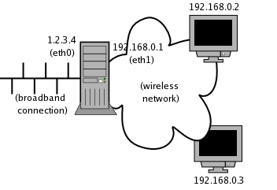
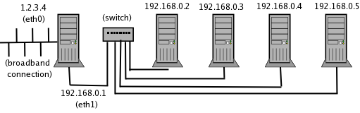
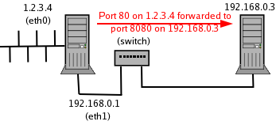
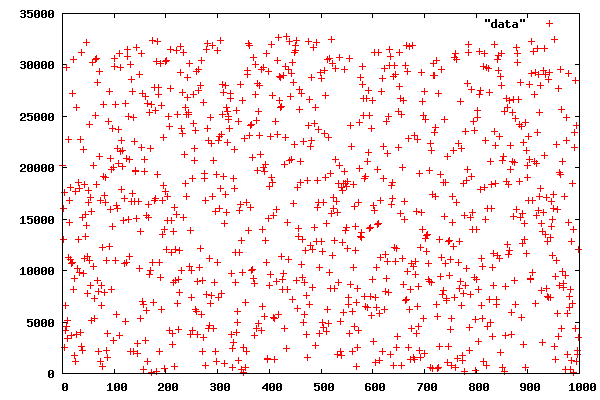
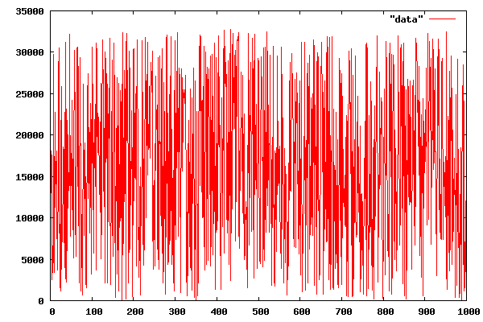
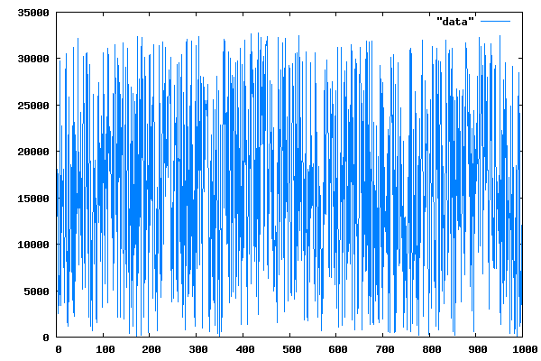
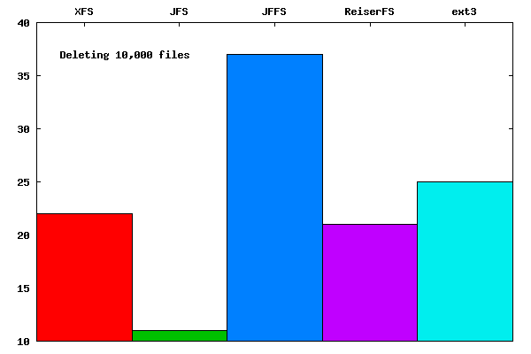
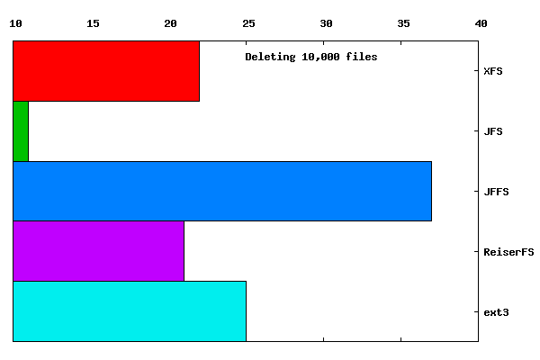
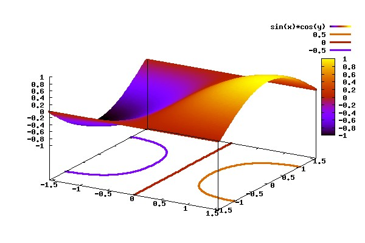

Thu, 20 May 2004 23:03:09 +0100
Thomas Adam (thomas_adam from bonbon.net)
Question by lgang (lgang from linuxnj.com)
This is a discussion that took place about the decline of e-mails to TAG
and possible reasons why this is. In this discussion, a number of issues
have been raised, and we would value your input, gentle readers.
-- Thomas Adam
Hi all,
I am also deeply concerned by the lack of e-mails that we are
receiving. To date, we only have one (possible) TAG thread and that will
only be of any use and that is only if I pad the contents out at
publishing time. Truth is, I have noted a considerable drop in e-mails
over the months, ever since the move...
Now it may well be down to the time of year that we're at -- it is
approaching summer for most people, and so maybe people aren't as
computer-oriented as they might normally have been. But if things
continue in this way....
Luckily we have a little stash of backlogged e-mails. The only danger
with these though is that some of the information may well be out of
date, but that's something that we can either correct, or ignore.
Depends.
Maybe we need to "advertise" more somehow?
-- Thomas Adam
I am also deeply concerned by the lack of e-mails that we are
receiving. To date, we only have one (possible) TAG thread and that will
only be of any use and that is only if I pad the contents out at
publishing time. Truth is, I have noted a considerable drop in e-mails
over the months, ever since the move...
[Ben]
[Nod] That's a huge, primary concern for me; Heather and I had a longish
conversation about it when I decided to take this gig, and I expressed
it to her then. She had a few really good suggestions, and I had a
couple of small ideas of my own; it's going to require some cash - which
I'm willing to toss at the problem - and a fair bit of getting
pro-active in getting the word out, something I haven't had much time to
do lately and is a somewhat bitter pill for me because of that. I've
never been particularly good at marketing - which, of course, is what's
involved here - bit I'm going to have to grit my teeth and learn
somehow.
[Sluggo]
There was a significant drop in mails with the move to linuxgazette.net.
My opinion is not to stress out about it but just adjust the zine
accordingly. Maybe combine the three TAG columns into one. Maybe focus
more on articles and less on TAG. The article supply is still holding
steady, even though it doesn't look like it till the last couple days of
the month. But it's always been like that.
One thing Margie did that I gradually lazed out on was sending an
email to all the authors who had published in the last three issues
reminding them about the next article deadline. Maybe that could be
combined with an encouragement for articles. Certainly there are several
strong authors like Rob Tougher and Mark Nielsen that we haven't heard
from recently. Maybe Mark has some already-written articles he can send
us. There's also Pradeep Padala, Pramode C E, and the other guys at that
engineering school in India. I can go through the authors directory and say
which are the most promising prospects.
[Thomas]
I'm wondering whether it is something more than a campaign ad. With the
vast amount of literature already out there in the form of howtos, web
forums, IRC, etc -- people are not only able to fix their problems with
relative ease, but also experiment for themselves much more easily.
We've actually already created ourselves an indirect target audience --
the complete clueless.
Gone are the days of "The Answer Guy" when
e-mails were coming in by the sackful. Those people that know how to do
something are not going to be interested in using the LG as a resource,
since they can do it.
The quality of questions coming in has dimnished greatly as well. I can
only put this down to resource availability -- if something has been
done and documented (assuming a person reads it) then they'll use it.
This is also true of articles. But then as I now have lots of time to
spare, I can get cracking on that.
It's interesting to note therefore, that LG is actually
self-perpetuating its own demise in a way. The more we document things
(in terms of articles and TAG, etc) the less we actually need to answer
since it has already been answered.
I partly blame the move from SSC for this -- it was done with great
haste - certainly something that could not be avoided, but I wonder just
how many people know of the original us?
[Ben]
Anyone who's got advice or can offer help on this point is more than
welcome to step up to the line.
Luckily we have a little stash of backlogged e-mails. The only danger
with these though is that some of the information may well be out of
date, but that's something that we can either correct, or ignore.
Depends.
Maybe we need to "advertise" more somehow?
[Ben]
I'll need to get together with Heather again and go over the ideas that
she had, which ranged from good to terrific, and toss money and effort at
the problem. Anyone willing to share in the effort part, particularly
those who have some experience and/or knowledge in it, would be
welcomed with relief and joy.
[Sluggo]
That's a good idea, but I don't know how you reach people who don't
read LWN or Slashdot. If SSC had been willing to put reciprocal links
to the other zine it would have helped enormously, but that was nothing
we could control. It looks like we need a "marketing task force".
[Thomas]
But I think you missed my point -- it's not so much a decline as such,
since there are people moving to linux everyday -- but that is perhaps
more true on a corporate level.
[Ben]
By 'decline', I meant a decline in our readership. There's certainly
none in the adoption of Linux, which is what's setting off my alarm
bells; I'd like to see somewhat of a parallel between the two, which
seems like a reasonable goal to me.
[Thomas]
It's these people (businesses) that are
going to now capture the interest of Linux. But then corporations are
going to be out-sourcing people to train their staff (one hopes) so it
probably won't be more of an individual-basis as it was when Linux was
very much a curio for people to "try" out. But you never know -- if it
may well encourage people into looking at it from a personal viewpoint
as well.
[Ben]
Y'know, that may well be a very strong point to consider. "Newbie"
doesn't have to mean "non-professional"; it may well be that we need to
put some thought into connecting with the segment of the business world
that wants to jump on the Linux bandwagon. Well spotted, Thomas.
[Thomas]
It is a valid and worthy opinion to consider -- especially when that is
how a lot of news about Linux (via radio, columns, etc) is covered; it's
done from a business angle.
[Ben]
I've contacted a friend of mine who did graphic design for Apple for a
number of years, and he's agreed to do a column on it - the main thrust
of it is to teach people how to present a professional appearance in
their products, whether Web pages or UIs. It's not specifically Linux,
but it's a strongly relevant issue, and I believe that it's a pretty
good move toward adding a bit more professionalism to LG.
[Thomas]
Oooh, I like this idea. Sounds like just the kind of wedge that might
set a trend. Unfortunately, what I cannot do is focus upon that aspect
since as you all know, business just is not my area.
However, what I can do is seriously look, cover, divulge information
and articles about how Linux is being used in education, specifically
within the UK. This is a really hot topic at the moment. I am on a
tiny mailing-list (SuSE-Linux-Schools-UK) that was originally setup as
means of sysadmins to ask their problems. I joined it, since I was one
of the admins at school at the time.
Now though, they have evolved much more such that we're seeing a serious
consideration for Linux in schools (not quite dual-boot for the students
alas, but rather server-side) <www.schoolforge.org.uk>.
[Thomas]
What we need to do, is to make LG (as I have been saying) more at the
forefront for information and appealing to any target audience,.
[Ben]
Err. That word, "any", is a nasty one in this context. It's impossible
to be all things to all people; trying to is a classic way to go broke
in business. In effect, you're trying to produce infinite output from
finite resources. What I'm looking for is a place to concentrate our
efforts - we may end up with something a bit more broad or more
narrow; I suspect the former but refuse to predict.
[Thomas]
Perhaps we need to focus a little on how businesses are using Linux?
[Ben]
Hmm. Say, interviews with CTOs of Linux-using businesses? That strikes a
spark of interest with me. I'm not in much of a position to do it myself
- I don't think there are too many Linux-using businesses in the
techno-hinterland I inhabit or in the farming communities surrounding it
- but I surely consider such an interview applicable to even LGs current
mission: I've never believed that a newbie's education in Linux consists
of strictly technical coverage. Thomas, you're really striking oil
today!
[Thomas]
But these are only trivial examples --- it is not a popularity contest.
If we start trying to compete we'll fall under completely. We need to
try and work alongside what it is that makes the success of the other
sites more appealing, for want of a better word. What I _don't_ want to
see is a loss of continuity with what we have at the moment. We just
need to try and introduce a new concept into LG.
[Ben]
[Nod] Agreed. I don't want to imitate anyone else - if we're doing that,
then there's no need for LG at all. Revitalizing those parts of LG that
are good but have fallen asleep, cautiously adding new pieces that we
believe will improve the readers' experience (as well as ours - if it
ain't fun, it's not worth doing), and sloughing off (again, very
slowly and carefully) those pieces that we've decided don't work: that's
my goal. In a lot of ways, it's like running a business - but on a
cooperative model.
Will it work? Hell if I know. I do think that the experiment is worth
making, though, and I'm willing to pump my time and effort into it. All
I can promise you folks is that I'm going to do my damndest to make it
go - but I can't do it alone. I can only hope that all of you will
extend me a bit of your trust, patience, and cooperation as I work to
fit myself into this job.
[Thomas]
It would be interesting to know how each of us here actually heard of
LG. I know for me, it was a link from tldp.org
[Ben]
Hmm. I couldn't even tell you, actually; a dim little memory says that I
found LG via a search engine while searching for some Linux-related
info, but I can't recall for sure.
The thread changes slightly to Tom Brown coming up with some excellent
ideas
-- Thomas Adam
[Tom]
OK, I'm gonna jump into this discussion, even though I'm gonna regret
it. I've stirred up hornet nests before, so this won't be the first
time. I fully expect to get a few "stinging" replies.
[Ben]
Heck, Tom, we don't skin people and roll'em in salt... at least not
until their second fox pass (never could speak that French stuff,
anyhow.) Besides, I've asked for input; it would be damn silly of me
to reject it without considering it even if I didn't like it right off
the bat (and as it happens, I think you've got some good skull sweat in
this one.)
[Tom]
When talking to the people new to Linux, I think part of the challenge
is that they don't have the same mind-set or point-of-view as "old-time"
or "traditional" Unix/Linux users. Part of it is the GUI/CLI issue that
others have mentioned, but it's more than that.
[Ben]
[Nod] I think this is one of the largest parts of the shift in the type
of new adopters. At first, we got "the brave techies"; next, we got
folks who couldn't afford the Wind0ws environment with their "pay
through the nose for every breath you take" model (and we're still
getting lots of those); now, we're getting corporate people to whom time
is a precious resource and who want their info - solid, in-depth, and
yet clearly stated - and want it right now.
[Tom]
The CLI in Linux is
richer, and more complex than the MS-DOS that a lot of folks are used
to. Another problem is that a lot of people aren't interested in
becoming programmers. They just want to know how they can rip tunes from
an audio CD, or whatever. While some people do want to learn it all, I
think those people are in the minority.
[Tom]
Those would be the future sysadmins - but not everyone wants to become
one. Mostly, the answer for that larger group is "install Knoppix and be
happy"; I think that Jimmy's articles and tips would hit these guys
square in the center.
My own problem is that I am an old-time geek and a CLI addict; I don't
know how the heck I'd work in a straight-GUI environment - it would just
strangle me, reduce my productivity to 10% of what it is now. In some
cases, I'd be unable to perform the work at all. So, what I have to do
is to ignore my own prejudices and think of what is good for LG - and in
this regard, I agree with what you're saying.
[Tom]
Now, I think giving people a CLI as well as a GUI way of accomplishing
what they want is a great idea. Especially if you're giving them an
easy-to-use shell script that prompts for parameters, instead of making
someone type-in a huge command line with lots of alphabet-soup options
they'll never remember. They're not really looking for a GUI, just an
easy step-by-step "cookbook" way of getting the job done. Without
learning what is, to them, a programming language.
[Ben]
This, though, isn't possible. If there was a single subset of complex
commands that every Linux user needed - yeah, sure. We're certainly not
going to hide it from them. Since EPID, so are the tasks they need to
accomplish - and that's why shell scripting is a language, flexible
enough to accomplish tasks that _aren't_ predetermined.
You *can't* have power and flexibility without complexity. We're not
here to teach people The One True Way to use a buzzsaw; if they don't
learn the whys and the wherefores and the safety considerations (not
just the requisite motions), they are going to get their hands chopped
off. If it was totally safe, then it wouldn't cut the lumber.
If you have a list of common tasks for which you use your "magic lines",
great - feel free to expound on why and how. If people find them useful
and clamor for more, I'll be the first to admit to being wrong.
[Tom]
Each time I tried to start an article in this vein, for example,
I quickly discovered that I lacked the in-depth knowledge and experience
to do an adequate job.
[Ben]
Don't you think that that's an indicator? Think of it this way: the
folks who created the standard Unix toolkit were trying to address the
same concern that you're voicing now. If there really was a need for a
specific task, why would they have omitted it? If a utility was useless,
why wouldn't they have dropped it? Over time, the toolkit has been
polished to a high gloss due to the huge number of people using it - and
so it becomes a classic example of Open Source development, where
worthwhile projects survive, and others dive into complete obscurity. If
you find yourself lacking in experience for this task, it may well be
because far more experienced people - and lots of them - have already
done the job you're trying to improve on.
[Tom]
As to your other ideas - which I uniformly like and think valuable:
Here's a rough top-of-my-head list of topics:
* The Hardware Department: Pick some bit of hardware that isn't
automatically handled by Linux, or isn't handled well, and show the user
what to do to make it work (cookbook fashion). Another topic might be
the sort of benchmark article LG did recently. Another might be helping
a user select a good video card (or printer, etc.) to use with Linux.
[Ben]
Heh. If it isn't handles well, that's a bug worth filing. However,
there's hardware out there that's complex to set up regardless of the OS
- and I think that it would be a good idea to set up a Hardware Corner
where we discuss exactly that. This will, however, require some
knowledgeable folks to contribute their experience.
Say, how about this: what if we contact OEMs for the various types
of hardware and see if they'd be willing to give us an article on
setting their stuff up under Linux? I'll bet that most of them would be
pretty happy to get their product's name in print.
Would anybody care to volunteer to select companies and prod them?
[Tom]
* The To-Do List: Pick a task (or a series of them) the user might want
to do, and again, show them cookbook-style
[Ben]
Those would be the shell, Perl, etc. tips that have been here all along.
[Tom]
* Finder Free: Pick a Windows or Mac application, and discuss the "free
software" alternatives. For CLI apps, you might want to include a script
file that makes using them (almost) as easy as a GUI.
[Ben]
Oooh, nice. Wanna write this?
BONUS: I'd be happy to help you with
the CLI part, if and when it's applicable.
[Tom]
* Up Against the Wall: Security issues are very much on people's minds
these days. Linux security issues, and solutions are different from
Windows. Topics here might include: how to update different distros
(those without a built-in mechanism to do this), how to configure a
firewall, etc.
[Ben]
[Nod] We've had security articles here before; however, we don't have a
regular "security" writer. It would be nice if we did. I could do some
good bits myself, but I'm being extra-careful not to overload myself on
the LG side - I have 1) a bad reaction to being overloaded and 2) work
commitments that can pretty much shut me down for days at a time. For
now, doing the gig and trying to puzzle out these issues with everyone's
help is about as much as I want to handle. I've also got an article in
process for this month, and that feels like I'm already skating on thin
ice.
[Tom]
* Brain Surgery For Beginners: Pick a Sys Admin task that someone might
want to do (configure Samba comes to mind), and describe the steps most
people will really need to do, pointing them to specific documentation
elsewhere for problems.
[Ben]
Ditto.
[Tom]
* Paint and Wallpaper: GUI desktop issues. Some topics here might be how
to use Superkaramba, as well as KDE and Gnome topics (perhaps a
step-by-step on upgrading from one version of KDE or Gnome to another
for the non-rocket-scientist)
[Ben]
Ditto.
[Tom]
*Arresting Development: Topics related directly to programming and
programming languages. Tutorials in something common to Unix/Linux, but
not the DOS/Windows world (awk, python, etc) might be nice.
[Ben]
Got'em; see my Shell Scripting and Perl tutorials here in LG.
[Tom]
*Tales From The Dark Side: Running a specific Windows app in Linux via
Wine or Wine-x. Mono tutorials, tips and suggestions.
[Ben]
Hmm. That would be someone else's pidgin; I'm not too knowledgeable in
that respect. What I'd love to see would be someone doing an article
about VMware - installation, issues, etc.
[Tom]
Normally, I wouldn't think to tell you guys what to do, or suggest any
changes. This is your gig after all, and you're doing a teriffic job.
But you did ask for suggestions.
[Ben]
Yeah, yeah.
Drop the defensive posture, Tom; you're in TAG, and
always welcome to contribute. That's a large chunk of what The Gang
does; at least that's the way I've always seen it.
Well, there you have it folks. As I say, this is your magazine. Please,
let us know your views and what you think.
-- Thomas Adam
Best of not so best but please update it?
Thu, 13 May 2004 16:22:09 -0800
Rebecca Alden> (LG)
From one of my local LUG members, who is new to Linux.
-- Heather
I was told to go check out Linuxgaztte and I am glad that I did. It has
lots of good things in it. But I am still on Windoze and if I'm going
to install Linux I didn't want to wait for the installfest. Gues I will
have to though, because the howto you have on burning ISO under that
other OS I found the past answers section doesn't work.
It looks like she is correct. The general principle works, but there
are new common places to look forr all the CD images at once, and nearly
all of the software links for trial software for mswin have gone bad.
Since the material in that thread was mostly from our readers, it looks
like you'll have to rescue us again, folks. Most of our Answer Gang are
rather purely Linux now. Alternatively, if you can't help directly but
really want to see this yourself; let me know, and if the idea
is popular enough I'll do the research to write an update for it.
-- Heather
Jimmy O'Regan
sends his regrets on being
unable to do his "Songs in the Key of Tux" this month. He was going to
cover recording software, but it seems that his drummer got broken... and
unfortunately, he's not talking about a piece of software (ouch. Jimmy,
please emphasize to the man that "percussion" does not involve car
crashes. Unless, of course, you're with a Progressive Technical Death
Thrash Metal band, in which case carry on as you were.) Despite all that,
Jimmy has still managed to get in a couple of articles this month and has
promised more for the months ahead. I tell you, the man is unstoppable.
As of press time Jimmy is fine, but still has a bit of RSI. We'll see
more of him next month.
-- Heather
This page edited and maintained by the Editors of Linux Gazette HTML script maintained by Heather Stern of Starshine Technical Services, http://www.starshine.org/
I am a little bit concerned the people here (especially those that are
more established) don't fully understand what constitutes a 2c-tip. A
2c-tip is just that -- something that is short and easy and can be done
in a few steps. Asking whether it is appropriate (Neil!) just causes us
more grief to wade through meta questions!
This might be in the form of a configuration tweak, or a minuture
program that performs a given task, etc. Often though, larger tips are
turned into TAG column entries -- and vice versa.
Often what would be flagged by Heather and I as a TAG entry might well
form off-shoots to 2c-tips if the quality of the thread in question is
not worthy.
But we will publish anything not only explicitly marked as a 2c-tip, but
also what we deem appropriate to be one. We certainly don't filter out
sent in tips -- only vary rarely. The only thing I will say to you is
that don't always expect to submit one and see it in the next
release of LG. Heather and I decide which tips get published when.
Between these two lists, I figured my problem out. My TZ87 tape drive
works perfectly under Linux. I found a product called vmsbackup that
allows unix users to extract plain-text files from a VMS backup tape.
If anyone else is interested in such a piece of arcana, it can be
downloaded from http://vms.process.com/ftp/vms-freeware/FREE-VMS. I
had to hack the code (can't use any other word than that, as I'm not a C
coder at all) to eliminate certain files from being attempted. Once I
did all that, every came off the tape nice and clean.
Next topic will be... smile
Thanks to everyone who has had input here - I really do appreciate the
help!
Becca
[Ben]
That's great, Becca - I'm glad to know that we could help, and like to
hear success stories. Too bad more of the folks we help don't let us
know the end result; a sense of completion is a pretty nice thing to
have.
The main bulk of this thread appears in this month's TAG column, here:
Well, my problem is a little bit different. I'm building up a network at home and I want all computers with Windows 2000 and also Linux. Every computer is working ok with both operating systems, but the server. The two operating systems are installed already but, linux is not showing up. You go to the cmos setup and see Linus there in its own partition. But when the computer is booting, it doesn't show up and no way to boot from Linux. Now, even Windows is not showing up. After a few steps, [ counting memory, detecting drivesetc, it gets stuck ]
Could you give me a hint to solve this?
[Kapil]
I sense some serious confusion. How can the CMOS show you partitions,
let alone Linus (I presume you mean Linux)? Even the BIOS setup doesn't
know anything about the operating systems.
1. Try to use a rescue floppy (your created one at install time didn't
you?!) to boot your system. If you don't have any such alternate method
to boot the existing system you may have no choice but to re-install.
2. When you run a server, it doesn't really make sense to run two
different O/Ses on it. How would the clients/users know before
connecting what they could expect from the server?
[JimD]
Your question doesn't quite make sense. You can't see partitions or
OS installations from your CMOS Setup. You can see drives.
So when you say things like: "linux is not showing up" and that you
"see Linus[sic] there" and "it doesn't how up" it's not clear what
you're looking at, where you're expecting to see it. You say that
"you go to the cmos setup" but as I've said a normal BIOS setup
doesn't display partitions and doesn't provide a list of installed
or available OS' or other boot options.
So you must be looking at a bootloader (LILO, GRUB, System Commander,
ChOS, NT's "Boot Manager" or something else. So, figure out which
bootloader you're trying to use. You could also try booting from a
rescue disk like Knoppix, Tom's Root/Boot, the LNX-BBC or whatever and
using that to install a different boot loader like LILO.
It sounds like you'll need help with that, too. Without more details
about which distribution you installed, the order in which you
installed Linux and Win2K etc. (Hint: install Microsoft products first,
then let Linux work around their settings).
Multiple people using the same machine configuration and it's programs is a
wonderfull thing. Especially when the other people want to be at their own
machine and not install linux on their machine. There Exceed starts to be
very effective. So far so good.
Now the problem. I updated my pc from Mandrake 8 to 9.1(standard kernel). I
had XDCMP Xclients working on MDK 8 before. That worked perfectly. Now I have
xdm partially configured and I am able to login at the remote PC graphically,
but then the server seems to be giving the client one screen/window for the
desktop, one for each program and so on. I used to get one integrated thing
completely filling the client PC's physical screen as if using Linux in stead
of Windows with Exceed.
Anyone knowing what I have to change(or where to look) to get things identical
to the "local" behaviour?
Does anyone know some place to find some good backgrounds on Xserver, Xfs and
X in general?
Thanks for your time,
Michiel Leegwater
[Kapil]
Let A be the client program (the "Xserver" which can be full screen or smaller)
which in your case is Exceed.
Let B be the server system with which A is communicating which in your
case is a GNU/Linux Mandrake machine.
B makes requests to A to create and destroy Xobjects; the actual
placement, rendering and so on of these objects is a matter for A to
decide.
So I do not think the problem you have given has to do with the Mandrake
Server (B). Instead look at the configuration of the Exceed software (A).
The very strange thing is I never changed the config of B. And after I did now
the situation did not much improve(no improvement actually). Any more hints?
Because there's more than just xdm I also tried gdm, kdm and kde (editing
/etc/sysconfig/desktop)
Turning to kde or kdm has a strange extra effect logged in /var/log/messages:
Aug 11 19:46:10 obelix mdkkdm[8558]: Greeter exited unexpectedly
Aug 11 19:46:10 obelix mdkkdm[8558]: Abnormal helper termination, code 1,
signal 0
Aug 11 19:46:34 obelix mdkkdm[8567]: Greeter exited unexpectedly
Aug 11 19:46:34 obelix mdkkdm[8567]: Abnormal helper termination, code 0,
signal 11
Does anyone know why this happens??
[Chris]
It's been a while. I used Exceed Version 7 for grins. If I recall, in the
configuration options (I think it was screen), I had a choice between
multiple windows or a single window. With multiple windows, you get the
wonderful Microsoft background with a new window popping up with each
application. With the single window choice, you see what you would if
you were running X on the Linux machine.
For example, I set up Exceed to run in passive mode listening on port 6000.
I then telnet into the Linux machine, set my DISPLAY name to refer to
the appropriate host with window 0 (for example "export DISPLAY=nitro:0"),
and might (from the telnet session) type "icewm &".
That's the way I do it. Hmmm.
I'm guessing that you might wanna see the graphical login, so, I am hoping
that all you have to do is the single window selection thing, and things
will work. I hope.
Regards,
Chris Gianakopoulos
Linux Filesystem
Joydeep Bakshi (joy12 from vsnl.net)
Answered By Faber Fedor, Benjamin Okopnik
Hi,
I am a computer faculty & also teach Linux. I am interested to know about the
advantage/disadv. & the difference of ext2,ext3 and the new Reiserfs
file-system of linux. could any one please provide me these info. ?
any link for further reading is also welcome.
[Ben]
[blink] Joydeep... how do you do that if you're not familiar with even
the very basics of finding information under Linux? I really don't envy
your students the quality of information they're receiving. The above
may sound harsh, but given the questions you've posted to this list over
time - including this one - and the skills required for teaching
(considered independently from the actual content), I find the above
statement highly incongruous with your level of knowledge.
ReiserFS isn't what I'd call "new". You can find out about the various
filesystems by looking at the relevant HOWTOs - the Filesystems-HOWTO,
the ext3-(mini,usage)-HOWTOs - and the kernel documentation, usually
available (if you have the kernel sources installed) in
"/usr/src/kernel-source-<version>/Documentation/filesystems, with each
type of supported FS having its own explanatory file.
Ive just bought a new pc, and had the vendor load linux mandrake, as I =
am not impressed with micoscum corp. I need to run mechanical desktop =
which dosent seem to like linux, so can u please advise.
talking to some boffins, I need to partition the drive, and set up =
windows, can u please advise, and if this is the case, can u please =
advise how to go about it, as I am a real novice at linux.
thankyou
john savic
[K.-H]
well -- whatever mechanical desktop is, if its a win only application
you'll need windows.
If it's not very hardware intensive you might get away in an emulator
(e.g. wine). Then there is (commercial) vmware which runs a virtual PC inside
linux (which can run windows). Or you change to a dual boot system Linux/win.
Dual boot system are best set up right from the beginning. Messing around
with partitions after everything is installed is always risky. You can try
(commercial) PartitionMagic to repartition.
fips http://www.igd.fhg.de/~aschaefe/fips is a free version with a less
fancy GUI I guess.
What partition layout would be useful (or possible) depends on how it is now
and what you want. Usually I would put firs the win partition and then only
the Linux partitions (note plural), often in an extended partition. If you've
one huge Linux partition now I don't know if you can free the beginning -- it
might be restricted to free the top end.
Well -- messing around (successfully) with partitions takes at least some
knowledge of partitions on PC systems. This is not (very) specific to Linux,
but of course all the Linux tool behave a little different from the old DOS
tools (like fdisk, format,...).
There is a nice page giving hints how to ask questions which get
answered/answered with something really helpful:
which also mentions the possibility to search on TAG or google for relevant
search criteria: "linux partition resize" might be all that's needed.
PPP over parport?
Peter Paluch (peterp from frcatel.fri.utc.sk)
Question by linux-questions-only (linux-questions-only from linuxgazette.com)
Answered By Thomas Adam
Hello,
Originally it started as a non-Linux problem. I had to interconnect two
Windows95 machines via a serial link using the Direct Cable Link function.
However those machined refused to connect (of course, what else could I
expect from M$ products...). After several hours of unsuccessful experiments
I finally booted Linux on one of these machines and after five minutes of
playing with pppd I had the Windows95 and Linux up-and-connected perfectly.
However, the serial link was too slow because of an old UART, so I thought
of using a parallel cable instead, with Win95 at one side of the link and
Linux at the another. But here I have a bigger problem. The Direct Cable
Link in Windows always uses PPP protocol, no matter what type of cable it is
used over. However, as it seems, the pppd daemon under Linux supports serial
ports only. I could not force it into using the parallel port, neither lp0
nor parport0. This is the only answer I got from it:
Aug 2 14:20:44 gericom pppd[11246]: pppd 2.4.1 started by root, uid 0
Aug 2 14:20:44 gericom pppd[11246]: tcgetattr: Invalid argument(22)
Aug 2 14:20:45 gericom pppd[11246]: Exit.
I did my Google homework but I couldn't find any clues how to use PPP
protocol over parallel port under Linux and there is no mention of anything
similar in the pppd documentation or source files.
Is it possible at all to run PPP over parallel cable under Linux? If yes,
how should it be done?
I know there is PLIP but it won't work. Win95 really uses PPP even over
parallel cable.
Thanks in forward.
Regards,
Peter
[Thomas]
That's because you cannot. Alas, as your observations and in-depth
research show, you can only use pppd over serial (in Linux anyhow).
I use PLIP all the time, although I have never had the need to use it to
connect to windows, but that doesn't mean I don't know of a few things to
try
Would you go as far as to allow DOS <-> Linux connection? There's a link
on the PLIP-HOWTO.
I would like to setup a VPN network between my offices.
I really would to stick to linux that ohter OS's .
What do you recommend I go with?
I have read some thing about PPTD would this be a could choice for me?
Thanks
Emmanuel
[Jay]
PPTP, actually. The Microsoft Approved VPN -- which means don't use it
unless you have to.
If this is for a business application, you might want to consider buying
boxes -- the SnapGear's do both PPTP and IPSec, the other alternative, and
they run Linux, which might make your life easier if you're a linux guy; I
am, we resell them, and they Just Work. They start at about $250 a side,
which is probably less than you'll pay yourself to set up IPSec on a pair of
linux boxes, not to mention the time you'll spend tightening those two Linux
boxen to be safe directly connected to the net.
If you really want to do it yourself, PPTP and IPSec are the two things to
Google for.
This is the homepage of frox. It is a transparent ftp proxy which is released under
the GPL. It optionally supports caching (either through an external http cache (eg.
[1]squid), or by maintaining a cache locally), and/or running a virus scanner, on
downloaded files. It is written with security in mind, and in the default setup it
runs as a non root user in a chroot jail.
[Thomas]
Cool, I like this! As I am resident on the Squid-Users mailing list, I
have word that they developers do plan to allow FTP access at some point
through Squid, but they're not sure when.
will tell you two things -- a) that the subject line of this e-mail is
dismal, and b) you should send your e-mails to this list in PLAIN TEXT
only and not HTML. If you look below betweeen the "---annoyance---"
marker, that is a sample of how your e-mail has reached us. Hardly
distinguishable.
However, to answer your question...
"Swap" refers to the term by which disk-space can be used as memory. Under
Windows (Note Bene -- it is not a windows XP specific concept, but is
generic over all windows'), this is represented by a file.
In Linux, however, this is represented by a partition (an area of disk
that is "housed" by itself). This is then mounted at boot-time in
/etc/fstab (assuming you have the correct entry). You can make a swap
partition by doing...
mkswap /dev/hdxx && swapon
where /dev/hdxx is the device that you want to use for your swap.
It is also possible to share your windows swapfile with Linux. The
following howto will help you with that:
I'm running Slackware 3.0 on a 486sx with 4MB of ram, and I want to install
some tar archives.
Here's my question:
After I have untared a file is there a way I can
"undo" the changes that tar made?
I looked on freshmeat.net and could not find any "Install trackers."
Perhaps I should download that RPM thing from Red Hat and just use that.
[Ben]
Yep; fairly basic, in fact.
rm `tar tf tarfile.tar`
This, of course, assumes that the tar file is still in the same
directory from which you untarred it, your UID and the directory/file
permissions haven't been changed, etc. That is, if you just untarred it
with:
tar xf tarfile.tar
then the above will get rid of the newly-created files.
<smile> Searching for specific software often requires more than just
trying a single query and giving up, particularly when the phrasing of
the query is not definitive. You should also take a look at
"checkinstall" and "stow" for relevant solutions which you may find
necessary later in the installation cycle - this assumes that you're
installing a non-Slack tarball. I also suggest reading my "Installing
Software from Source" article in LG#74; it deals with several important
parts of this process.
If you're using Slackware, its default package manager (IIRC) is based
on gzipped tar files. You really don't want to start messing with
alternate package schemes until you're comfortable with the native one.
I just caught a hidden assumption in what I wrote, above - I was
presuming that no existing files were overwritten by the untarring
process. If you were to, e.g., untar a file that replaced your
"/etc/passwd" and then "rm"ed the contents list as above, your system
would become, erm, slightly less useful than formerly.
The standard solution is "don't do that, then." As I described in my
article, you should untar into a directory reserved or created for the
purpose, then make the decision about what gets installed vs. deleted,
etc. Again, this is in regard to a "random" (meaning that it is not a
part of your distribution) tarball; as with any piece of software you
install on your system, you need to vet it carefully - something that is
normally done for you in the distro packages. This strongly implies the
above procedure; when you untar a file as root, particularly in '/',
you're exposing your system to anything that the tarball author wants
to do - including complete system takeover or erasure. /Caveat emptor/.
Recently there had been discussion on the method of switching off the UTF-8
LANG setting that is appearing in recent RedHat (and maybe other) distros.
The best way of turning this off for the whole system is by editing the file
/etc/sysconfig/i18n
For setting it up for a particular user, create a file ~/.i18n and put the
setting there.
ashwin
This page edited and maintained by the Editors of Linux Gazette HTML script maintained by Heather Stern of Starshine Technical Services, http://www.starshine.org/
The Answer Gang
Linux Gazette 103: The Answer Gang (TWDT)The Answer Gang 103:
By Jim Dennis, Karl-Heinz Herrmann, Breen, Chris, and...
(meet the Gang) ...
the Editors of Linux Gazette...
and
You!
We have guidelines for asking and answering questions. Linux questions only, please.
We make no guarantees about answers, but you can be anonymous on request. See also: The Answer Gang's
Knowledge Base
and the LGSearch Engine
Welcome to a summer day among The Answer Gang. We're having a quiet
little picnic here... hmm, perhaps a little too quiet. Nonetheless
we've got some juicy Answers for you to enjoy reading.
If you've got a good juicy question I encourage you to please email it
to The Answer Gang (tag@lists.linuxgazette.net). I mean, sure, we have these
nice guidelines we'd like you to try out first - but we welcome the
stumpers. There's a lot more distros than there used to be and even we
learn something from our fellow Gang members occasionally.
As the question of how big business takes Linux to heart is now taken a
bit more seriously than in past years, we'd like to encourage corporate
types to ask us their tricky questions too. We can't promise the
speediest response time (although many have been pleasantly surprised) or
that we really will answer (although we have quite a few people now -
your chances are good). If you want to be anonymous we can take it a
step further and try to sanitize things like IP addresses when you
describe your network... feel free to go into detail, or to sanitize
your notes yourself (encouraged). If you've got one of those "this may
be confidential" notes, make sure you've explicitly granted us
permission to publish the thread worldwide.
"The enterprise" is such an incredibly vague buzzword these days I'm
surprised Viacom/Paramount doesn't get mad about the press abusing it.
Of course they're the ones who named their now famous line of starships
after a verb that we've turned into this planet's most abused group
noun. But let's take a serious look at the question, shall we?
What draws the line between simply a decent sized company and an
"enterprise"? Multiple sites, sure. Is a family chain of restaurants
an "enterprise" then? Maybe. Divisions and departments and layers of
management who have never met each other, because the heirarchy has
grown over time to handle so many groups of people? Yeah, definitely
getting there. So we need project planning software. OpenOffice serves
charting needs and presentation, plus the usual word processing. How
about planning large networks? Some of the logic I've seen for keeping
departments out of each others business via internal firewalling ...
defies all logic but slicing through the Gordian knot and redesigning
the layout. There's social questions too (what, you think internal
policies grow on trees? Cut down quite a few, maybe) and development
plans that may span 5 or 6 years.
Oops, 6 years ago we weren't nearly so impressive. I think that some
companies will only see Linux creep into units as their plans turn out
to be met by it. So for a long while to come, it's going to be very
important how we handle working with multiple platforms - whether
they're the Borg of Redmond, or Sun, or Macintoshes. That means
coughing up schematics and documents that their software will handle too -
or making sure that our open source stuff runs on a world of other
systems. The latter is a better answer for the long term - applying new
logic of ergonomics and workplace expectations into the results - but
sucks for the short term, because units don't necessarily want to fire
all their software - or risk being unable to work on the same documents
as other divisions do. Or their partner companies in a consortium.
Which came first, the chicken or the egg? Something that's not quite a
chicken, generally waits for the chicken to "lay an egg" in the
idiomatic sense: Linux or another free solution will be tried when an
expensive one is either too painfully expensive to contemplate first, or
flops so horribly that departments stray from the golden path of Fully
Paid Support Contracts to get something that Just Works.
And, as my husband has discovered in small business of years gone by,
there will be times that when such solutions work they will be left to
stay and serve. In fact it will be insisted upon, as department heads
change and the server continues to operate a given system will retain
its traditional bearing... and it will be just as hard for a $DISTRO
driven company to switch to $DISTRO2 if the first does not serve them
optimally - because there will be years of unit dependence on features
that work "just so" on $DISTRO. This is the real thing any new distro -
or in fact any distro which seeks to move people around the new
"enterprise" linux users over to their userbase - has to make easy, or
it will be an uphill battle every step of the way.
We already know that at least some of "the enterprise" is ready for
Linux... here and there. Is "the enterprise" ready for the change in
paradigm to go with it, of how our software changes and open source
projects flow into and out of the equation? We don't know. Are the
brand name distros up to the combined challenge of having their toes
nibbled by specialty distributions (see LWN's
Distributions
page) at the same time as trying to play both the "Try us, we're
different" and "no problem, we're the same" cards in the battlefield...
err, marketplace, yeah, that's what they call it.
Speaking of the battlefield, in my country, the last Monday in May was
Memorial Day, when we honor our war veterans of all varieties. So I'd
like you to stop, and consider those you know, or who your families know,
who have fought great battles and won... especially those who won at
the cost of their lives or livelihood, and also of those who fought
for the lives and livelihood of people they never knew or understood.
Thanks for reading. Have a great summer. See you next month.
Network Connection Problem
From Chris Gibbs
Hi ya,
I think this is more a Microslop question, but maybe you can help.
I have 2 PC's on 10baseT network, normally both run linux and everything
is
fine. I have a fairly paranoid setup where hawklord.universe.com is
192.168.0.1 and cannot ftp gigahawk.universe.com. But hawklord can http
gigahawk ok. (confession... my modem is ISA, hawklord has ISA slots,
gigahawk
does not... so hawklord is just a box I can ssh to and run Netscape
from, its
also where I keep documentation on an Apache server, so the ability to
http
hawklord would be good)
[Faber]
I didn't quite follow this. I think you're saying that everything works
the way you want it to, right?
And are these names related to that Saturday morning cartoon where all
the heroes had wings? I think one of them was called Hawkman.
gigahawk (192.168.0.2) can ftp hawklord, http hawklord whatever.
Security don't
matter at all for hawklord, I just assume its insecure.
If I boot Windoze ME on gigahawk I just can't find hawklord. ping just
times out.
[Faber]
Oh, that's easy enough to fix. Don't boot into Windows ME!
<bah-da dump> <rimshot>
So like er, how do I get MS ping to find the linux box? Everything on
hawklord
works fine.
[Faber]
You can ping hawklord by IP address, right? Go no further until you
do can that. Run winipcfg to make sure it has the IP Address/subnet
mask you think it does. If you can ping hawklord by the IP Address (NOT
the name!), then you may read on.
[Ben]
If you can't find "winipcfg", try "ipconfig" from the CLI. There are
several versions of Wind0ws that don't have the GUI version.
People complain Linux is hard to configure but is (at
least for me)
simplistic compared to Wintendo. I've found places in Windoze to put
DNS numbers,
what I can't find is hosts.allow;
[Faber]
And you won't.
What you're looking for it the /etc/hosts file.
hosts.allow is used only for, IIRC, tcp-wrappers.
[Ben]
BZZT. It's just a host access control mechanism, not dependent on TCP
wrappers AFAIK (although you can do some interesting additional stuff if
you have it; see "man hosts.allow".)
[JimD]
Well, actually, hosts.allow and hosts.deny are used by tcpd and
other programs compiled against libwrap (the TCP Wrappers libraries)
which include things like the Linux portmapper (used by NFS, and
other ONC RPC services).
So you're sort of both right, depending on what you mean by "TCP
Wrappers" (the binary /usr/sbin/tcpd, or the library, libwrap.so
against which it's linked).
[Faber]
The file you want is in $(WINDIR)/System32/etc/hosts.sam (I'm pretty
sure that's where it is. At worst, search for "etc"). You need to
populate it and rename it to simply "hosts".
[Ben]
"hosts" does not have the functionality of "hosts.allow" or
"hosts.deny"; it just does IP to-hostname-mapping. Chris is right:
there's no equivalent file in Wind0ws - although you can get the
functionality in other ways (not that I'm an expert on obsolete OSes,
but I've had to set up a few mixed networks.)
[Faber]
You will also see a "lmhosts.sam"; don't bother with that unless you
have Samba running on hawklord. And if you're going to play with Samba
and lmhosts, be sure to read up on MS netbios technology; that oughtta
make you not want to do it.
[JimD]
If you can't ping it by IP address, and it's on your LAN; that
suggests an ARP problem on one side or the other. Try arp -d $IPADDR
on the Linux side of things. Then try running tcpdump -e -v
to watch the ARPs and other traffic between the two. The -e will
force tcpdump to print MAC addressing info on each dataframe it
captures --- so you can spot if some other ethernet card is responding
to the ARP requests. Of course you can use ethereal or "tethereal"
(the text mode of ethereal) in lieu of tcpdump if you prefer.
[Ben]
BTW, there's a really good intro to reading what I think of as "libpcap
syntax" - the stuff that's put out by tcpdump, ethereal, etc., by Karen
Kent Frederick at SecurityFocus. In fact, it's a four-part series:
Ok I tried winipcfg and I think it gives the clue cause there is a tick
in
the NetBIOS Resolution Uses DNS checkbox. Apart from that its what I
expect. ping 192.168.0.1 continues to time out.
[Faber]
Since you're pinging the IP address, name resolution (DNS, /etc/hosts,
etc.) doesn't work into it. (But does Windows try to do a NetBIOS name
resolution with the IP Address? Hmm...)
If you can't ping using the IP address, something is screwed up on your
network, either the IP address (the other box isn't on the
192.168.[something other than 0] network, is it?), the subnet mask is
wrong, or the Windows box isn't configured for networks.
Did you try Jim's suggestion about ARP? That information would be
useful.
Does that mean I must set up a name server on hawklord?
Also I'm confused about bindings seems I must check client for MS
networks or
printer sharing else I don't get anything. I don't really seem able to
alter anything (situation normal for me in Microkak)
[Faber]
Get it to ping ith the IP Address, then we'll worry about name servers
(but in general, no you don't have to set up a name server).
You do have TCP/IP installed on the Windows box, yes? "Client for MS
networks" enables SMB/NEtBIOS stuff. PRinter sharing uses the same
stuff; I don't know why they're separate.
[David]
Silly idea, try having the MS boxen ping itself. Have seen times that
the MS boxen was so confused that it could not ping itself let alone
someone else. It took a reboot, removal of all networking, reboot,
reinstall networking, reboot and finally it would ping itself and low
and behold it could ping the rest of the network too.
[Ben]
I'm with David on this one, and will confirm the above as standard
behavior (I've seen it a number of times), although I think of it in
different terms:
ping 127.1 # Test the local TCP/IP stack
ping localhost # Test the local hosts file
ping xxx.xxx.xxx.xxx # Test "outside" - ping the immediate upstream IP
ping foo.bar # Test all by pinging an "outside" host by name
Finding out where this breaks is the first key to troubleshooting this
kind of problems, whatever the OS.
Linux and SCSI tape drives
From Becca Putman
In your webpage, you said, "If you can't access your tape drive, try
loading the st.o module."
I'm very new at this, so please bear with me... how do I load that
module? I did a simple installation of RedHat 9(Shrike). When I
installed my Adaptec aha-2940 card, RH saw it immediately. It also sees
my tape drive (a DEC TZ87 - supposed to be the same as a Quantum
DLT2000), but it doesn't load a driver for it. Suggestions?
[Faber]
Are you sure RH hasn't loaded a driver for you? Sounds like it did. Why
do you say it didn't load the module?
Anywho, you can look at the list of loaded modules with 'lsmod' to see if
it is loaded. To load a module, you can type "modprobe st" and the
system will load the st.o modules and any dependencies.
I created the tape with high density
and 6250 blocksize. However, restore is complaining about a tape read
error on first record. If I take out the blocksize argument, it says:
[root@tara tape]# restore -x -v -f /dev/st0 *
Verify tape and initialize maps
Input is from tape
restore: Tape block size (80) is not a multiple of dump block size
(1024)
[K.-H]
/dev/st0 rewinds automatically on closing of the filehandle.
/dev/nst0 is the no-rewind version which will not rewind the tape
automatically
This is valid for all commands using the /dev/[n]st0 icluding mt
[Faber]
Isn't this saying that you should be using 80 instead of 6250?
[Ben]
Probably not. I suspect that what it's seeing is a header that it
doesn't understand, which happens to have "80" in the position where
the block size would normally go.
The tape was created with OpenVMS v6-something back in 1997. Please
tell me there is some way to read it...? Pretty please? Pretty
please with sugar on top?
[Faber]
Can anyone help the lass? I can't remember the last time I did a tape
retore let alone doing one from an different OS (waitaminnit! can you
restore a VMS tape to a un*x/Linux box?).
[Ben]
Erm, well... only if you wanted to make it into a VMS box.
In short,
no - at least as far as I know. You should be able to extract the tape
contents, though - and I seem to remember that there's a VAX/VMS
emulator available for Linux, so you might even be able to run what you
extract.
I found a free product called vmsbackup, which will take a tape made
with VMS and extract it to a unix (read, Linux) box. It can be found at
http://vms.process.com/ftp/vms-freeware/FREE-VMS, if anyone is
interested.
Anyway, I've come to the realization that my tape has a bad block -
right at the very front. sigh I tried to use mt to move the tape
past it, but it appears that just before mt exits, it rewinds the tape.
Real helpful.
Opening bz2/Z file in ViM
From Ashwin N
Hi,
I am facing a strange problem. ViM has a plugin that enables users to edit a
compressed file just like a normal file. Say you open a file.txt.gz in ViM,
it directly shows and allows you to edit the uncompressed test. But,
strangely on my system this is working for .gz files but not working for
.bz2 files!
The plugin file in question is gzip.vim (on my system it is in
/usr/share/vim/vim61/plugin/gzip.vim). The file insides look OK to me, the
right commands are being called for .Z, .gz and .bz2 files. But, when I open
a text file compressed using bzip2 I get junk in ViM, whereas .gz files open
correctly.
Hoping a solution/lead from you guys
[Kapil]
It works here! What I have is:
Package: vim
Version: 6.1
Debian version: 320+1
You didn't say what version etc. you have!
One possible problem that you may have is that your gzip.vim
calls "bunzip2" rather than "bzip2 -d". The former may not exist in some
broken installations of "bzip2".
Mine is ViM Version 6.1, from RedHat 8.0.
No, it uses "bzip2 -d". And both "bzip2 -d" and "bunzip2" work at the shell.
I even changed "bzip2 -d" to "bunzip2" in the gzip.vim file, but it is still
not working
This strange problem is really bugging me. I am lost wrt to the solution for
this. Any other things I need to check?
[Jason]
The 'gzip.vim' in /usr/share/vim/plugin has last change date as 2003 Apr
06
My version uses the '-d' flag and doesn't rely upon gunzip and
bunzip2.
This is just a shot in the dark, but you might want to try list the
autocommands in the 'gzip' group in vim, like this:
:au gzip
....which should dump a list that looks something like this:
--- Auto-Commands ---
gzip BufRead
*.gz let ch_save = &ch|set ch=2
'[,']!gunzip
set nobin
let &ch = ch_save|unlet ch_save
execute ":doautocmd BufReadPost " . expand("%:r")
gzip BufReadPre
*.gz set bin
gzip BufWritePost
*.gz !mv <afile> <afile>:r
!gzip <afile>:r
gzip FileAppendPost
*.gz !mv <afile> <afile>:r
!gzip <afile>:r
gzip FileAppendPre
*.gz !gunzip <afile>
!mv <afile>:r <afile>
gzip FileReadPost
*.gz let ch_save = &ch|set ch=2
'[,']!gunzip
set nobin
let &ch = ch_save|unlet ch_save
execute ":doautocmd BufReadPost " . expand("%:r")
gzip FileReadPre
*.gz set bin
gzip FileWritePost
*.gz !mv <afile> <afile>:r
!gzip <afile>:r
All .gz related stuff, nothing to do at all with .bz2 and .Z. At this point,
I realized that after the commands in gzip.vim were being loaded, they were
being overridden by the above somewhere.
I checked the global vimrc file, which is in /usr/share/vim/vim61/macros and
I hit bull's eye. In that file, the gzip command was getting overridden with
the stuff shown above. So, I just deleted the gzip autocommands in the
global vimrc file and everything is working fine now. All the three
supported files (.gz, .Z, ,bz2) are opening properly.
[Thomas] This incident was also reported on the Vim mailing list, but I was too
slow on the uptake to mention it at the time.
Submitters, send your News Bytes items in
PLAIN TEXT
format. Other formats may be rejected without reading. You have been
warned! A one- or two-paragraph summary plus URL gets you a better
announcement than an entire press release. Submit items to
bytes@linuxgazette.net
Legislation and More Legislation
European Software Patents
The subject of European software patents has returned to the news in
the past few weeks. As was reported some months ago, when the European
Parliament last looked at the question of software patents it included
several amendments to the original proposals. These amendments were
seen by many in the small-medium-enterprise and open-source communities
as representing a welcome move away from unfettered and universal
patenting of software. Now, however, the European Council of Ministers
has reversed many of the Parliament-introduced changes, to the anger of many MEPs.
This latest twist in the European patent saga is far from being the end
of the story. The common position agreed by the Council of Ministers
must now pass the law before parliament again for a second reading, and only when both bodies agree on it can it be passed and become law.
If any European readers have specific views on this issue, it is a very
opportune time to raise it with your MEP, and with the other candidates
running for MEP in your constituency (European Parliament elections are
on June 11th 2004).
Independent?
The Age has published an interesting article by Leon Brooks discussing the "independence" of various policy think-tanks.
For most GNU/Linux users and enthusiasts, these bodies only become
visible when they issue pronouncements on the undesirability of Free
and Open Source Software. Brooks makes insightful, and useful,
comparisons between these organisations' opinions on Free Software, and
on other issues of economic and social freedom. The facts behind the
rhetoric indicate that though the terms free trade and free market are
often invoked, the underlying ideology is one of protectionism and the
support of vested interests.
"putting a mail server on the Internet
without filtering is like covering yourself with barbecue sauce and
breaking into the Charity Home for Badgers with Rabies."
Connexions
is a Content Commons of free, open-licensed educational materials in
fields such as music, electrical engineering and psychology. Mostly
college level, but some content for younger students too. a place for
communities of authors and instructors to create, find, and share
content.
X.org
The X.org foundation has issued their first release of the X Window System
since the formation of the Foundation in January of this year. The new
X.Org release, called X Window System Version 11 Release 6.7 (X11R6.7), builds on the work of the X.Org X11R6.6
and XFree86TM Project Inc. V4.4RC2 releases to combine many of the
latest developments from a large number of the participants and
companies working with the X Window community.
To assure consistency with industry and community requirements and practices, it was developed from the X.Org X11R6.6
code base and the XFree86 V4.4RC2 code base, with the addition of bug
fixes and enhancements. These enhancements include: new IPv6
functionality, Freetype V2.1.7, fontconfig V2.2.2, Xft V2.1.6, Xcursor
V1.1.2, and Xrender V0.8.4, with corresponding changes in documentation
and notices. Additional source and binary releases are anticipated
during 2004.
Slashdot compiled a selection of links on recent Gentoo goings on, including the departure of Daniel Robbins, and the possibility of a major push into the enterprise sector.
Linux From Scratch
The Linux From Scratch community
has proudly announced the release of LFS-5.1. This patch release
contains many bug fixes and package upgrades since LFS-5.0. In
particular, this release features the Linux kernel 2.4.26, GNU C
Library (glibc) 2.3.3 and the GNU Compiler Collection (gcc) 3.3.3. The
book's layout has also been improved, leading to enhanced readability
and improved clarity.
SuSE has announced the release of SuSE Linux version 9.1.
Software News
vnc2swf
vnc2swf
is a screen recording tool for X-Window (X11), Windows and Mac OS
Desktop. Vnc2swf captures the live motion of a screen through VNC
protocol and converts it a Macromedia Flash(TM) movie (.swf).
Originally hailing from Ireland, Michael is currently living in Baden,
Switzerland. There he works with ABB Corporate Research as a
Marie-Curie fellow, developing software for the simulation and design
of electrical power-systems equipment.
Before this, Michael worked as a lecturer in the Department of
Mechanical Engineering, University College Dublin; the same
institution that awarded him his PhD. The topic of this PhD research
was the use of Lamb waves in nondestructive testing. GNU/Linux has
been very useful in his past work, and Michael has a strong interest
in applying free software solutions to other problems in engineering.
How Linux is Changing the Face of Education in Africa
Okay, let's get the formalities out of the way first, so we can get
on with what this article is actually about: the FOSS revolution happening
in African Educational institutions today.
My name is A.J. (It stands for an unpronounceably long Afrikaans name
so just don't ask), and what I do is to develop FOSS solutions for
Education. I work as lead developer for a company called DireqLearn. We are
South-African in origin, but have offices in several other African
countries now. The past two years have been very exciting for us. But this
is not about my company, it's an attempt to share what I have learned and
seen over this period about what is happening in Africa today: the
successes, the failures, and the alteration in mindset we are witnessing.
Two years ago, we started deploying LTSP-based thin-client solutions in
schools. As we progressed, we found that there were so many specific setups
and enhancements that we were doing over and over again, that we started
doing single pre-installed disk images, which we then just dd'd onto the
drives for the schools.
This worked for a little while, but it didn't scale up far enough. Our
answer was to develop our own distribution that meets the needs of schools
specifically. We called it OpenLab. There are a number of other
similar projects out there, although as best I am able to ascertain,
OpenLab is currently the most advanced project to create a distribution
specifically tailored to the needs of the African education market.
But why is education in Africa different from anywhere else? Why not
just use K12LTSP and be done with it?
Because the first thing you realize if you do this for a while, is that
when you put a computer lab into a school in rural Namibia where there is
only dirt roads and solar power, the teachers - petrified of damaging this
valuable gift, and generally petrified - will lock up the lab, and never
open it up again. In direct contrast, put children in front of these
computers and they will start exploring, digging, learning - not just about
computers; it becomes a means of accessing the wealth of knowledge that is
just a google away. A way for a little 8 year old boy who lives essentially
in the middle of knowhere [ I don't know if A.J. intended to use this
word or if it's a misspelling, but I'm leaving it in just as it is - I
like it. - Ben ] to become a citizen of the world.
But you need to overcome the teacher barrier first. That means training
teachers until they are comfortable with the technology. Only then will
they let the children use them. Only then can you see growth, and
learning. I am an African, born and raised, and all too aware that the
continent is in shambles (and we do not gain anything by denying that fact.)
I know that at least part of the answer is education. It takes a lot more
than computers in schools to fix education, but it is a step in the right
direction.
FOSS in this world is not just an idea, but a crucial requirement to
success, I believe. It's not just about cost, in fact with some of the
"education initiatives" a certain huge software developer has launched in
Africa, you could well find the costs basically equalling out. It's about
at least two other things.
There is a philosophical side to it. Africa cannot proceed into the
twenty-first century as just a software consumer, we have a lot of
programming talent and potential on this continent, and we want to
participate in the global software industry as equals. That means skills
development. FOSS is just that, a form of skills development everyone can
afford. Universities and colleges are out of the price-league of most
Africans by far, but anyone can download and study source-code. By giving
more people access to FOSS systems, we improve the market for skills
attained on them, we increase the abilities of these people to gain and
expand those skills and perhaps most importantly, we keep our markets alive
and vibrant with the reality that alternatives exist.
There is also a practical, technical side to it. Thin-client computing
doesn't just save money, it actually works much better in educational
environments. Suddenly, you are talking about a user-based system, rather
than a machine-based system. This means that you can let the children
explore and learn without worrying that they'll break the system for
everybody else. If a user in a Wind0ws(tm) lab hides the 'My Computer'
icon, the teacher has to waste time helping the next user get his system
standardized again in order to do the days lesson. This leads to draconian
measures - suddenly everyone just follows the rules, there is no personal
data, no exploration, no development. LTSP solves this nicely: if a user
hides an icon from the desktop, it's hidden on his desktop, no problem.
Also for the first time, users can learn to customize desktops to really
suit their working style, despite sharing resources. Some people prefer a
taskbar at the bottom, some prefer it on the left hand side. Neither is
better, each just a matter of preference. The more the computer works like
you think, the easier it is to work on. LTSP makes this possible.
Finally FOSS offers one thing that is absolutely crucial to education,
and which no other model can compete with. Language support. First language
education is proven to be by far the most effective kind. FOSS systems
simply have better language support. Anyone can translate open code. The
number of African languages for which desktops, spellcheckers, and useful
applications are available is increasing almost daily, with the translate.org.za project taking a leading
position here, including teaching translation skills to people doing
similar work in other countries.
So all this sounds nice, but I said there is a revolution happening, so
I need to back that up. Here are just some of the projects which are
currently running OpenLab or
similar systems, such as K12LTSP and
SkoleLinux.
In Nigeria, the Education Tax Fund along with SchoolNet Nigeria has
already deployed 35 school sites with LTSP based systems.
In Uganda, a project launched by SchoolNet Uganda has convinced the
ministry of education to mandate thin-clients for all future funded school
lab roll-outs.
In Namibia a project currently running led by Schoolnet Namibia, will
be placing thin-client labs with wireless Internet access into over 200
schools. The largest non-Microsoft based lab roll-out in Africa to date.
Schoolnet Namibia aims to eventually put such labs into every school in
Namibia.
Apart from the thin-client labs which is the area I am most heavily
involved in, there are numerous other projects currently running. The OSSMS project as well as
the schooltool project at schooltool.org are working on creating
viable school administration software. Currently both are in advanced,
stable and usable states. In South-Africa the CSIR also has a number of
FOSS education projects under way.
Simply put there is a revolution under way in Africa, education is being
revamped and taken to new levels. FOSS, and especially Linux is a key part
of this. Will it be successful? Will Africa move out of it's legacy of
poverty, disease, corruption and war? Perhaps not, it probably takes a lot
more than any given type of software to achieve a social revolution on that
scale, but it is not unattainable, and education is a key factor in
uplifting any society, and FOSS is changing the face of education in Africa
for the better.
Security is an issue that every Internet-connected user needs
to consider. Attackers are using increasingly sophisticated tools
to attempt to access our computers, and unfortunately they
sometimes succeed. Denial of service attacks, worms, viruses,
data theft and plain old vandalism are common, and chances are
that if you haven't yet been affected, you know someone who has.
Even home dial-up users should be aware of the risks. Firewalling
is one of the primary tools for controlling computer security,
and in this article I'll try to explain what a firewall is and
what it does, without getting bogged down in too much technical
jargon. So do you need a firewall? If you connect to the
'net, even via dial-up, the answer is probably yes.
Who This Article Is For
It's for ordinary users who run Linux on their home computers,
and who'd like to improve their security without having to wade
through reams of documentation. I've tried to write in plain
English, keeping it as simple as possible. As a result, this
article only just scratches the surface of Linux firewalling, and
the areas I've covered are somewhat oversimplified. Hopefully
though, there'll be enough detail to get you started.
Whatever you do, don't think that just because you are using
Linux that you'll be safe - sure, you'll be immune to most of the
worms and viruses out there, but that doesn't mean your machine
won't get "owned". And let's face it; some Linux distros
as-installed are as insecure as MS Windows...
Firewalls - What They Are and What They Do
Originally, the term Firewall was used to describe a wall
isolating one section of a building from another in case of fire.
In a computing environment, a firewall performs a similar
protective and isolating function, and forms a sort of security
gate between your computer and the Internet.
Firewalls can take a variety of physical forms, using both
hardware and/or software. They can be dedicated hardware devices,
or combined with other devices such as modems or routers.
Sometimes a computer will be set up to do nothing but act as a
firewall to protect a local network. For the home computer user
however, firewalling is usually implemented as a software package
installed and configured to protect not just the home computer,
but any other computers on the local network that share the
Internet connection.
How do They Work?
In simple terms, we could say that firewalls are used to control traffic
between your computer (or LAN) and the Internet. More accurately, a
firewall is a way of enforcing a policy or a set of rules governing the
flow of data packets to and from the outside world. Firewalls that are
used to protect home computers are usually based on packet filtering, i.e.
data packets are admitted or rejected according to the way the rules are
configured. Most firewalling tools for end users will come with a sensible
set of rules by default, so that they can benefit from at least some
protection even without any configuration.
Some Jargon
Here are a few of the basic terms you are likely to encounter
when setting up a firewall. You might already be familiar with
them; if so read on anyway to see how they relate to
firewalling...
Hosts - A host is simply a computer that is connected
to (or a part of) a network. This includes the Internet, which is
basically just a network of networks. Firewalls can be configured
to prohibit access by specific hosts.
Ports- These are the virtual connection points used by networking
services; not to be confused with physical ports like the serial or USB
ports. They are allocated an identifying number, and common services are
associated with specific ports by convention. For example web servers
generally use port 80, outgoing email uses port 25 and so on. Many
operating systems will have lots of ports open unnecessarily - these
are potential access points for attackers. You could think of ports as
being analogous to the doors of a building. For a building to be of any use
it must allow some access; on the other hand trying to maintain security in
a building with dozens of open or unlocked doors will be impossible. A
firewall can not only control access through these doors, it can make the
unused doors invisible to hosts on the outside.
Packets - Data doesn't flow between hosts on a network
in a continuous stream, but rather it is broken down into
manageable chunks called packets. Each packet contains
information related to the type of packet it is, where it is
going to and where it has come from, as well as the data itself.
Firewalls will handle individual packets in one of these ways,
depending on how the packet matches the firewall rules:
Accept (a.k.a. allow) - This lets the packet through the
firewall. Same as no firewall.
Reject - Prohibits the package from passing through. A
"destination-unreachable" message is normally sent back to the
sending host.
Drop (a.k.a. deny, blackhole)- Prohibits the packet from
passing, with no response sent back to host.
Protocols are the methods or systems that define how
networking clients and servers will communicate. You are probably
familiar with at least some of these listed here; they are common
protocols that can be controlled with firewall filtering
rules.
TCP/IP (Transmission Control Protocol/Internet Protocol) - The
main protocol for data delivery over the Internet
HTTP (HyperText Transfer Protocol) - used for the
Web
FTP (File Transfer Protocol) - used for downloading
and uploading files
UDP (User Datagram Protocol) - used for one-way data
flow, e.g. streaming media
ICMP (Internet Control Message Protocol) - this one
allows routers to pass messages to each other, amongst other
things. It also allows hosts to "ping" others, which can
sometimes reveal useful info to a potential intruder.
SMTP (Simple Mail Transport Protocol) - for sending
email
Telnet - used to log in to a remote computer, telnet
is notoriously insecure. If you really need to do this, use
something like SSH instead
Rules - Firewalling is simply the enforcement of a set
of configurable rules. Each packet of data is assessed and then
accepted or rejected depending on how it compares to criteria set
in the rules. Firewall applications allow the user to configure
the rules, and then implement them.
Monitoring and Logging
As well as controlling network traffic, firewalling tools also
allow you to monitor or log network activity. The type of
activity that's reported on is configurable, so that you only
need be shown the interesting stuff, and not be overwhelmed with
tons of entries describing legitimate traffic. Log files can be
somewhat cryptic unless you know what to look for, and can
quickly become huge. GUI apps like Firestarter have a
big advantage in this area; they can monitor and display the
information in a way that is easy to understand.
How Linux Implements Firewalling
Firewalls under Linux (using software) utilize a tool called
iptables with the 2.4 series kernels, and ipchains
with the earlier 2.2 series kernels. In fact, it's quite possible
to run an effective firewall simply by entering ipchains/iptables
commands from a shell prompt. These commands configure the rules,
and start the packet filtering process. Entering these commands
manually would be difficult though, and here's why: first, you'd
have to be familiar with the iptables/ipchains syntax to know
what to type in. Secondly, because firewall rules tend to be
rather complex, it'd be time consuming. Thirdly, you'd have to go
through the exercise every time you booted, and fine-tuning would
involve typing in more obscure (to the average user) commands.
For these reasons, iptables/ipchains is generally run from a
script rather than directly from the command line. This way the
script can be automatically run at boot-up, and tuning carried out
simply by editing the script with a text editor or alternatively
from a GUI front end. There are plenty of pre-configured scripts
available, and if you prefer your firewalls point'n'clicky, you
can do it all with a mouse. So in fact, when we talk about
firewall programs, we're really talking about front-ends for
iptables/chains. Firewalls for home computers are generally based
around iptables' packet filtering capabilities - however, iptables is
capable of doing much more.
Setting up your Firewall
Which firewall tool should you choose? This is a bit like
asking which editor is best, or which distro to choose - ask
twenty different users and you'll get nearly as many different
answers. In other words, it doesn't really matter, they all do
the job so just use something that suits your own preferences.
Running a firewall on a home machine needn't be difficult, and
often requires no more than a couple of mouse clicks. Here are
your options:
Use your existing distro-supplied tools - This
should probably be your first choice. Most, if not all distros,
will set up basic firewalling by default. Mandrake, for
example, does this using rules whose "strictness" is determined
by the security level you select. The lowest security level
under Mandrake doesn't provide any firewalling, while the
highest enables a firewall using relatively restrictive rules.
You can change the security level at any time, not just at
installation. Other home-desktop style distros will have
similar tools, but they aren't always listed in the menus or
some other conspicuous place. This means you might have to dig
through your distros documentation to find out what tools are
available (there may be several, including GUI tools), and how
to run them. Most distros (e.g. Mandrake again) include a great
tool named Bastille that allows easy
firewall configuration, as well as many other security related
tasks. Some Internet related programs (e.g. Roaring Penguin's
ppp-oe package) can also set up a firewall, though the
configuration options may be somewhat limited.
Use a Pre-Configured Script - There are plenty of
these available for download on the 'net. These scripts usually
have a well-commented configuration section that you can edit
to suit your own requirements. This makes it easy to tailor
your firewall without having to understand lots of obscure
iptables options. They are usually sensibly configured by
default, so will provide reasonable protection for most users
as-is. Most people will probably want to add their firewall
script to their start-up scripts to enable the firewall on
boot-up.
Use a GUI Firewall - For those who prefer graphical,
mouse-click type tools, there are some of these available as
well. These are basically graphical front ends for iptables
scripts, and are an exceptionally easy way to configure and run
a firewall. They have the advantage of being a simple way to
monitor network activity like uninvited connections and port
scans etc.
The Hardware Firewall - It's unlikely that you'd run
a dedicated hardware firewall on your home computer or network,
but that doesn't mean some sort of hardware option is out of
the question. There are quite a few ADSL modems/routers on the
market that include firewalling capabilities, and they're often
no more expensive than a plain modem. The firewalling functions
on these devices require little or no setup, so for some they
can be an attractive option.
The Dedicated Firewall PC - Yet another option for
those running a home network is an old PC (e.g. 486) set up as a
dedicated firewall/router. There are distros designed for this
type of application (e.g. Smoothwall) that are easily set up via
a web browser. If you have a few machines on your network, this
might be a good way to set up a cheap and secure gateway.
Configuration
Before you even start, make sure you have no unnecessary
services running. Some of the older distros in particular would
run all sorts of servers by default, so turn 'em off and strip
them from your startup scripts. Whichever way you choose to run
your firewall, you'll probably need to configure a few things. In
general, I'd recommend starting off by blocking just about
everything, and only opening things up if they prove to be too
restrictive. The general idea is to shut off anything that you
don't need. Some questions you may be asked include:
Your Internet and LAN interface, e.g. ppp0 and eth0
Ports you will allow access to. For the average home user
who just wants to browse the web and do email etc. you can just
close them all. You might find that some apps (p2p filesharing
apps, or online gaming for example) will complain, but you can
always open ports later if you need to. Of course, those
running servers will need to keep the appropriate ports
available - but then if you are running servers, you
should be taking security very seriously, and I strongly
recommend that you get more detailed advice than what's
available here...
Permitted protocols - Again, only allow what you need.
The address of the internal LAN
The addresses of any hosts that you want to explicitly
exclude from accessing your computer.
What to do with unwanted packets - i.e. set to "REJECT" or
"DENY"
Many firewall tools (especially the ones that come with your
distro) should be able to figure much of this out for themselves,
and if you aren't sure, just go with the defaults.
Testing your firewall
It's important to check that your firewall is actually
running, and doing what it's supposed to be doing. The easy way
to do this is to connect to one of the online services like
ShieldsUp or
Sygate Online Services.
These can tell you quite a bit (using wanky buzzwords like
"stealthed"), such as which ports are open, closed or blocked,
how your computer responds (or doesn't) to different types of
requests and so on.
Links
There is an abundance of firewall related stuff on the web.
Here are a few that may interest you:
Some Ready-Made Firewall Scripts: MonMotha's
Firewall Scripts are popular, and a good choice for
non-techie users. The configuration section is brief and simple,
and the script is well commented. Arno's Firewall
Script is another popular choice, but more complex and
detailed than MonMotha's.
Graphical (GUI) Firewalling Tools: Firestarter is
very widely used, and has a graphical interface and firewall
setup and monitoring capabilities. TurtleFirewall is an
easy to use tool with a graphical configuration via Webmin. Guarddog A
firewall setup tool for KDE users..
Other Tools Smoothwall is a
software package designed to turn a PC into a dedicated
firewall/router. Configured through a web browser, and a cost
effective way of protecting a local network.
Disclaimer - I don't claim to be an expert on firewalls
or security (or anything else for that matter). In other words,
use the information in this article at your own risk.
John is a part-time geek from Orange, Australia. He has been using
Linux for four years and has written several Linux related
articles.
iptables is Linux's firewall which has been a part of the kernel since
version 2.4. It is often referred to as a packet filter as it
examines each packet transferred in every network connection to, from, and
within your computer. iptables replaced ipchains in the 2.4 kernel and
added many new features including connection tracking (also known
as stateful packet filtering). In this article we will use iptables to
build simple but effective firewalls for the following scenarios using
allow/disallow rules based on IP addresses, ports, and states:
a standard home computer;
a home/small office network with a single Internet connection;
port forwarding for a home/small office network.
Rules, Targets, Chains, Tables, States, and all that jazz
iptables makes decisions on what to do with a packet based on
rules that the system administrator creates. Data is passed
through the Internet in the form of packets of information;
connecting from your computer to a website will cause many packets to be
exchanged in both directions. A rule specifies the criteria necessary for a
packet to match it. A decision is known as a target and it can be
a user-defined chain (not covered in this article) or one of the following:
ACCEPT
Allow the packet through the firewall.
DROP
Drops the packet; the packet is not allowed through the firewall
and the sender of the packet is not notified.
There a number of other possible targets and we will cover some of these later.
Rules are grouped into chains which in turn are contained in
tables. There are three default tables which the packets may
traverse; we are only concerned with one of these right now: the
filter table. This is the default table and contains three
chains:
OUTPUT
For packets generated by and leaving your computer; for example
when you connected to the Linux Gazette's web site your browser
created a packet and sent it out of your computer to the Gazette's
server.
INPUT
Any packets coming into your computer; for example the packets
containing the Gazette's web page sent back by its server to your
browser.
FORWARD
For packets being routed through your computer; for example
entering one network card and leaving through the other. We will
cover this in more detail later.
The two other tables available by default are the nat table and the mangle table; we will use nat later for setting up a home network when only one network connection is available.
As I mentioned in the introduction, iptables is capable of stateful packet filtering. This means that we can create rules not only based on IPs and ports but also on whether a packet exists in any of the following states:
NEW
The packet is trying to start a new connection; for example when
you first connected to the Linux Gazette website your browser
attempted to create a new connection with the Gazette's web server.
ESTABLISHED
A connection that has seen packets travel in both directions; once
the Gazette's web server replied to your browser the connection is
established.
RELATED
A packet that is starting a new connection but is related to an
existing connection. An example of this is downloading a file over
FTP. When you first connect to an FTP server you are creating a new
connection to its FTP port. However, when you download a file from
the FTP server using this connection a second new connection is
made between your computer and the FTP server for the file
download. Although it is a new connection it is related to the
first. This stateful packet filtering is useful as this new
connection does not use the FTP port and simple port based rules
are not appropriate for this.
INVALID
This packet is associated with no known connection. These packets
should be dropped.
Creating and Storing Rules
Rules can be appended to the chains directly by using the iptables command. For example, to add a new rule to allow new connections to a web server running on your computer from anywhere we would execute the following:
$ iptables -A INPUT -s 0/0 -d 1.2.3.4 -m state --state NEW -p tcp --dport 80 -i eth0 -j ACCEPT
where:
-s (or --src or --source) and -d (or --dst or --destination)
is the source and destination specification of the packet. It is
usually an IP address with an optional mask.
0/0 is shorthand for 0.0.0.0/0.0.0.0 meaning that the source can be any IP address.
1.2.3.4 is the IP our your machine and is equivalent to writing 1.2.3.4/32
or 1.2.3.4/255.255.255.255 meaning the destination must be this and only
this IP. Other examples include:
1.2.3.0/24
Any IP in the range 1.2.3.0 to 1.2.3.255 (256 possible IPs). Could also
have been written as 1.2.3.0/255.255.255.0
1.2.0.0/16
Any IP in the range 1.2.0.0 to 1.2.255.255 (65536 possible IPs). Could
also have been written as 1.2.0.0/255.255.0.0
! 1.2.3.0/24
The exclamation mark inverts the match so this will result is a
match if the IP is anything except one in the given range 1.2.3.0
to 1.2.3.255.
-m state --state NEW
matches only packets that have a status of NEW. This can be anyone
of or a comma separated list of the four possible states.
-p tcp
apply this rule to packets using the TCP protocol only. This can be
anyone of tcp, udp, icmp or all (default). The exclamation mark can
be used to invert the match.
--dport 80 (or --destination-port)
matches a packet trying to connect to port 80. The exclamation mark
can be used to invert this match also. A range of ports can be
given in the format begin:end.
-i eth0 (or --in-interface eth0)
name of an interface via which a packet is going to be received.
Possible interfaces on your computer can be found using the command
'ifconfig'. In this example your computer is connected to
the Internet through the first (or only) ethernet card.
-j ACCEPT
the target. In this case, if the incoming packet is creating a new
TCP connection from anywhere to port 80 on your computer through
the first ethernet card, we will allow it through.
Note that in all of the following examples I am assuming that your computer is connected to the Internet through an ethernet card. Change eth0 for wifi0, ppp0, etc., as appropriate for your computer. Furthermore I'm assuming that your computer's IP address is 1.2.3.4.
Obviously we do not want to set up the firewall manually everytime we boot the computer. Most Linux distributions will give you the option of having these rules loaded automatically at boot from a file; in fact most distributions will come with a preconfigured firewall as standard. The location of this file will vary from distribution to distribution but it should be easily found by executing locate iptables'. For RedHat or Fedora Core users it can be found at /etc/sysconfig/iptables.
The essential elements of this file are: (I have added the line numbers for explanation - they should not appear in a file intended for use with iptables):
Listing 1 - The essential elements of an iptables file
Line 2 of this file tells iptables that the following rules apply to the filter table. The next three lines (3-5) define the default targets for the three chains. We place our rules after these and before COMMIT, which does just that; commits our rules to the firewall.
Each packet traverses the rules of the appropriate chain from the first to the last. If a packet matches a rule then it stops traversing the chain at that rule and its fate is decided by that rule's target. If the packet does not match any rule then its fate is the default target of its chain.
I would recommend using the following skeleton configuration for all your firewalls:
1 *filter
2 :INPUT DROP [0:0]
3 :FORWARD DROP [0:0]
4 :OUTPUT ACCEPT [0:0]
5
6 # allow local loopback connections
7 -A INPUT -i lo -j ACCEPT
8
9 # drop INVALID connections
10 -A INPUT -m state --state INVALID -j DROP
11 -A OUTPUT -m state --state INVALID -j DROP
12 -A FORWARD -m state --state INVALID -j DROP
13
14 # allow all established and related
15 -A INPUT -m state --state ESTABLISHED,RELATED -j ACCEPT
16
17 # add anymore rules here
18
19 COMMIT
I've set the default target for the INPUT and FORWARD chains to DROP, while allowing all outgoing connections (lines 2-4). On a standard server or home computer we should not be routing any packets as standard (we will later and we will look at this in more detail then). Any outgoing connections will come from our computer and we can generally assume that they are not a security problem. In contrast, all incoming packets should be treated as a security risk unless we have explicitly allowed them.
Line 7 tells iptables to allow all connections originating from the local loopback network interface. This is used by many applications to connect to local services and you must permit these connections. Lines 10-12 drop all connections with a state of INVALID.
Line 15 should be self explanatory - it allows all incoming established or related connections through the firewall. For a connection to become established or related it must first have had a state of NEWand have been allowed though the firewall via a matching rule (had it not been allowed through it would have been dropped by default and could not result in an established or related connection).
Scenario 1: Standard Home Computer
For the standard user using his/her home computer for Internet browsing, e-mail, etc. then the above firewall is all that is needed as it allows all connections out while preventing any connections that are not related.
For a more paranoid user that wants to control and log all outgoing connections we might use a firewall configuration such as the following:
1 *filter
2 :INPUT DROP [0:0]
3 :FORWARD DROP [0:0]
4 :OUTPUT DROP [0:0]
5
6 # allow local loopback connections
7 -A INPUT -i lo -j ACCEPT
8
9 # drop INVALID connections
10 -A INPUT -m state --state INVALID -j DROP
11 -A OUTPUT -m state --state INVALID -j DROP
12 -A FORWARD -m state --state INVALID -j DROP
13
14 # allow all established and related
15 -A INPUT -m state --state ESTABLISHED,RELATED -j ACCEPT
16 -A OUTPUT -m state --state ESTABLISHED,RELATED -j ACCEPT
17
18 # allow connections to my ISP's DNS servers
19 -A OUTPUT -d 2.3.4.10 -m state --state NEW -p udp --dport 53 -o eth0 -j ACCEPT
20 -A OUTPUT -d 2.3.4.11 -m state --state NEW -p udp --dport 53 -o eth0 -j ACCEPT
21
22 # allow outgoing connections to web servers
23 -A OUTPUT -d 0/0 -m state --state NEW -p tcp --dport http -o eth0 -j ACCEPT
24 -A OUTPUT -m state --state NEW -p tcp --dport https -o eth0 -j ACCEPT
25
26 # allow outgoing mail connections to my ISP's SMTP and POP3 server only
27 -A OUTPUT -d 2.3.4.5 -m state --state NEW -p tcp --dport smtp -o eth0 -j ACCEPT
28 -A OUTPUT -d 2.3.4.5 -m state --state NEW -p tcp --dport pop3 -o eth0 -j ACCEPT
29
30 # log all other attempted out going connections
31 -A OUTPUT -o eth0 -j LOG
32 # default is to DROP out-going connections
33
34 COMMIT
This configuration denies all connections by default and only allows those we explicitly define rules for. Line 16 adds a second rule based on the established or related rules for outgoing connections. Just as with line 15, this is necessary as the default rule of the OUTPUT chain is DROP. Also note that when we specifying the interface for the OUTPUT chain rules we use -o (or --out-interface) as opposed to -i.
The first rules we have added (lines 19 and 20) are to allow outgoing connections to your ISP's DNS server; I am assuming your ISP has a primary and a secondary DNS server with IPs 2.3.4.10 and 2.3.4.11 respectively. These connections are essential so your computer can convert a domain name (such as www.linuxgazette.net) into its IP address; without that conversion we would not be able to connect to the website. DNS lookups are usually done via the UDP protocol. Unless you are doing anything out of the ordinary this should be sufficient.
The next two rules (lines 23 and 24) allow your Internet browser to connect to any website using both the normal and the encrypted protocols. You'll notice that I have used http and https to specify the ports here instead of 80 and 443. This makes the rules more readable and you can substitute the service name for any port so long as it appears in the file /etc/services. You should also notice that in the second rule I omitted the destination IP mask; this is equivalent to writing 'match any destination IP' (-d 0/0). Lastly, I could have turned these two rules into one using: -A OUTPUT -m state --state NEW -p tcp -m multiport --dport http,https -o eth0 -j ACCEPT
Another standard operation that a home computer would be used for is e-mailing. E-mailing requires two services: SMTP to send mail and POP3 (or IMAP in some cases) to receive mail. I have added a rule for each of these (lines 27 and 28) where I am assuming that your ISP uses the same server for both (2.3.4.5). In most cases your ISP will not give you the IPs of its mail servers, but instead their domain names; e.g. mail.my-isp.com. We can rewrite these rules using this as follows: -A OUTPUT -d mail.my-isp.com -m state --state NEW -p tcp --dport smtp -o eth0 -j ACCEPT
-A OUTPUT -d mail.my-isp.com -m state --state NEW -p tcp --dport pop3 -o eth0 -j ACCEPT
It is generally a better idea to use IPs wherever possible.
The final rule has a target we have not come across yet: the LOG target. This logs the details of a matching packet. You can review the log with the dmesg command or via syslogd. Some distributions have a utility called logwatch which will format these reports into an e-mail sent to the root account. The LOG target is a non-terminating target; the packet will continue traversing the chain. So in the above example we log all outgoing packets that have not matched one of the rules, that packet continues traversing the chain and as there are no other rules, the default target for the OUTPUT chain is used (DROP).
If you use any other services, such as Jabber, IRC, file sharing clients, etc., you will have to add rules for these also. Just follow the above example. If you don't know what ports to open and you can't find it in /etc/services, then add a logging rule at the beginning of the rules, e.g. -A OUTPUT -i eth0 -j LOG
and examine the output of the command dmesg (look for the destination port, DPT=???). I also feel I should mention that filtering the OUTPUT chain in this manner can be quite problematic; you might find some programs hanging or freezing while they try and establish connections you never thought of allowing, or using the UDP protocol instead of the TCP, etc. Unless you really want or need to lock the OUTPUT chain down, it might be just as easy to set the default rule to ACCEPT and then block the outgoing connections on a case by case basis.
Scenario 2: Home Network with a Single Connection
Most home users and small offices connect to the Internet via a single dial-up, ISDN or broadband (DSL) connection. This scenario covers the problem: 'I only have a single network connection, but I would like all my computers to have Internet access. How is this possible?' The examples in this scenario will enable you to set up a home or office network using your networked computer as a gateway for your other computers.
 Figure 1 - Author's Home Network
My own situation is depicted in Figure 1; I have a single broadband connection with a static IP address (1.2.3.4) connected to eth0. My second ethernet card (eth1) is a wireless PCI card. In my home there are two laptops, each also with wireless cards built in.
The first issue is that every computer on the Internet needs to be uniquely identifiable by an IP address. Irrespective of whether you have a dial-up or a broadband connection, you will only have been assigned one IP address. This can either be static (some broadband ISPs will allocate you a single IP that will not change) or dynamic (you will be assigned different IPs every time you reconnect to the network). When you send out a packet it includes the destination address and the source address. Although we can send a packet with any source address, only replies to ones with your source address will return to you.
Now we must assign an IP to every network interface on the network. In the case of eth0, it was assigned by my ISP. But what IPs will we give the wireless interface and the laptops? ICANN (Internet Corporation For Assigned Names and Numbers) has assigned certain blocks of IPs for use in private networks. One of these blocks is given by the IP mask 192.168.0.0/255.255.0.0. Which IPs of this set you choose to use is entirely up to you. As you can see from Figure 1, I have assigned 192.168.0.1 to my wireless PCI card, and 192.168.0.2 and 192.168.0.3 to the laptops.
The nat (network address translation) table of iptables allows us to use one IP address for many different computers and works as follows: if the first laptop tries to connect to a website it sends a packet with the source address of 192.168.0.2 to eth1 of the networked computer. The networked computer will then forward this packet from eth1 to eth0. Just before the packet is transmitted, the nat table will change the source address from 192.168.0.2 to 1.2.3.4. iptables will automatically remember that it did this and when the reply packets arrive with a destination of 1.2.3.4 and change it to 192.168.0.2, routing it through eth1 to the laptop.
Let's begin with the firewall configuration:
1 *filter
2 :INPUT DROP [0:0]
3 :FORWARD DROP [0:0]
4 :OUTPUT DROP [0:0]
5
6 # allow local loopback connections
7 -A INPUT -i lo -j ACCEPT
8
9 # drop INVALID connections
10 -A INPUT -m state --state INVALID -j DROP
11 -A OUTPUT -m state --state INVALID -j DROP
12 -A FORWARD -m state --state INVALID -j DROP
13
14 # allow all established and related
15 -A INPUT -m state --state ESTABLISHED,RELATED -j ACCEPT
16 -A OUTPUT -m state --state ESTABLISHED,RELATED -j ACCEPT
17 -A FORWARD -m state --state ESTABLISHED,RELATED -j ACCEPT
18
19 # allow connections to my ISP's DNS servers
20 -A OUTPUT -d 2.3.4.10 -m state --state NEW -p udp --dport 53 -o eth0 -j ACCEPT
21 -A OUTPUT -d 2.3.4.11 -m state --state NEW -p udp --dport 53 -o eth0 -j ACCEPT
22 -A FORWARD -d 2.3.4.10 -m state --state NEW -p udp --dport 53 -i eth1 -o eth0 -j ACCEPT
23 -A FORWARD -d 2.3.4.11 -m state --state NEW -p udp --dport 53 -i eth1 -o eth0 -j ACCEPT
24
25 # allow outgoing connections to web servers
26 -A OUTPUT -d 0/0 -m state --state NEW -p tcp -m multiport --dport http,https -o eth0 -j ACCEPT
27 -A FORWARD -d 0/0 -m state --state NEW -p tcp -m multiport --dport http,https -o eth0 \
-i eth1 -j ACCEPT
28
29 # allow outgoing mail connections to my ISP's SMTP and POP3 server only
30 -A OUTPUT -d mail.my-isp.com -m state --state NEW -p tcp -m multiport --dport smtp,pop3 \
-o eth0 -j ACCEPT
31 -A FORWARD -d mail.my-isp.com -m state --state NEW -p tcp -m multiport --dport smtp,pop3 \
-o eth0 -j ACCEPT
32
33 # log all other attempted out going connections
34 -A OUTPUT -o eth0 -j LOG
35 -A FORWARD -j LOG
36 # default is to DROP out-going connections
37
38 COMMIT
39
40 *nat
41
42 # set up IP forwarding and nat
43 -A POSTROUTING -o eth0 -j SNAT --to 1.2.3.4
44
45 COMMIT
As well as demonstrating NAT, this example also introduces the use of the FORWARD chain. The networked computer is now also working as a router; as well an nat-ing the packets from the laptops, it is also routing them from eth1 to eth0 and vice-versa. As such we have adding another ESTABLISHED,RELATED rule on line 17, this time for the FORWARD chain.
Similarly, on lines 22,23,27,31, and 35, I have added in lines to allow the same connections we were allowing previously to come from the FORWARD chain. However, there is one big security risk here: I have not specified any source address. Anyone within range of the wireless network can assume an unused IP and use your broadband connection. We would prevent this by changing line 27, for example, to:
-A FORWARD -s 192.168.0.2 -d 0/0 -m state --state NEW -p tcp -m multiport --dport http,https \
-o eth0 -i eth1 -j ACCEPT
-A FORWARD -s 192.168.0.3 -d 0/0 -m state --state NEW -p tcp -m multiport --dport http,https \
-o eth0 -i eth1 -j ACCEPT
and similarly for the rest of the rules.
The iptables NAT-ing magic happens in the nat table with one rule:
-A POSTROUTING -o eth0 -j SNAT --to 1.2.3.4
It's as simple as that! Almost. IP forwarding is disabled in the kernel by default and you must execute the following to turn it on: $ echo 1 > /proc/sys/net/ipv4/ip_forward
You can place this line in the iptables startup scripts (usually /etc/rc.d/init.d/iptables) or, preferably, in the /etc/rc.d/rc.local script which is the last script executed during startup.
What if you are using a dynamic IP? Simply change line 43 to: -A POSTROUTING -o eth0 -j MASQUERADE
This is a special case where the source IP of the outgoing packets are changed to the IP of the outgoing interface; i.e. the IP of eth0. This can be used for a static IP as well but you are advised to use the appropriate version for your set-up.
Using the wireless network as depicted will also require setting the essid and mode parameters of the wireless card. The essid is simply a one-word name for the wireless network. The mode in this example will be Ad-Hoc as opposed to Managed (usually the default) as the network cards are communicating directly as opposed to using a base station. These settings can usually be configured with the following commands:
$ iwconfig eth1 essid barry_home
$ iwconfig eth1 mode Ad-Hoc
(replacing eth1 with eth0, wifi0, etc. as appropriate.
This scenario will work just as well if your set-up is a more typical small office set-up as depicted in Figure 2.
 Figure 2 - Typical small office network
In this case the networked computer is connected to a port on the switch or hub through eth1, and all other office computers are each connected to one of the other ports. The exact same firewall configuration as that in Listing 4 can be used.
Required network settings for this configuration
To be able to access the Internet using NAT a number of network configuration settings are required by each computer; the DNS server(s) IP address(es), the gateway IP, subnet mask and an IP address. For the networked computer these will all be supplied by the ISP; let's assume that the ISP provided the following:
IP address:1.2.3.4Subnet mask:255.255.255.192Primary DNS:2.3.4.10Secondary DNS:2.3.4.11Gateway:2.3.4.1
The settings for each of the computers using NAT will then be:
IP address:192.168.0.???Subnet mask:255.255.255.0Primary DNS:2.3.4.10Secondary DNS:2.3.4.11Gateway:192.168.0.1
Note that the gateway for the NAT-ed computers is the second network interface of the networked computer.
Scenario 3: Port forwarding
For the last scenario, let us imagine that instead of hosting your web server on the firewall machine you want to host it on one of the others, say 192.168.0.3. Let us also assume that you're using the Jakarta Tomcat web server which listens on port 8080 by default. Can we use iptables to forward all requests from the firewall to the web server, and to forward all the responses back through the firewall to the originating request? Absolutely and, again, we can do it through the magic that is NAT.
 Figure 3 - Port forwarding
There are two types of NAT; source NAT (SNAT) and destination NAT (DNAT). Scenario 2 used SNAT where we altered the source address of the packets coming from our internal network. This scenario will use DNAT to change the destination address of packets coming into our networked machine from the Internet.
This can be accomplished by adding one simple line (44) to our firewall:
40 *nat
41
42 # set up IP forwarding and nat
43 -A POSTROUTING -o eth0 -j SNAT --to 1.2.3.4
44 -A PREROUTING -i eth0 -p tcp -d 1.2.3.4 --dport 80 -j DNAT --to 192.168.0.3:8080
45
46 COMMIT
Listing 5 - Port forwarding
Ensure you have enabled the kernel's IP forwarding when using the nat table. Now all connections originally bound for port 80 on our networked machine will be forwarded to port 8080 of 192.168.0.3.
Last Remarks
One type of connection we did not cover was 'pings'. If you are running a server it is generally a good idea to allow echo-requests pings through the firewall using the following rule: -A INPUT -p icmp --icmp-type echo-request -j ACCEPT
You can use the -s option to limit the source IPs that are allowed to ping your machine.
Lastly, a common misconception among many people is that a firewall is "the last line of defence". It is not. It is only the first line of defense in what should be a properly secured, configured and up-to-date machine.
Community Disclaimer
This article is intended as introduction to iptables with practical and useful examples. It is nothing more and nothing less.
More Information
The best place for reading more on iptables and firewalling is the iptables homepage. It contains many how-to documents and tutorials: http://www.netfilter.org/
And, as always, the man page for iptables gives a quick overview of the default options and tables.
If you found this article interesting then you might be interested in looking up some of the other features of iptables:
the mangle table; used for specialised packet alteration
the string module; allows rule matching based on strings occurring anywhere within the data payload of a packet
time-based rules; allows rules based on time of day and day of week
tarpits; allows you to "catch and hold" connections from potential hackers, using up their resources but not your own
control over limits on quota and bandwidth usage
randomising; match packets randomly. Can be used for load balancing with DNAT, to simulate a faulty connection, etc.
Barry O'Donovan graduated from the National University of Ireland, Galway
with a B.Sc. (Hons) in computer science and mathematics. He is currently
completing a Ph.D. in computer science with the Information Hiding Laboratory, University
College Dublin, Ireland in the area of audio watermarking.
Barry has been using Linux since 1997 and his current flavor of choice
is Fedora Core. He is a member of the Irish
Linux Users Group. Whenever he's not doing his Ph.D. he can usually be
found supporting his finances by doing some work for Open Hosting, in the pub with friends or running in the local
park.
The basic principle of graphic design has been the same since Gutenberg
first created moveable type: provide information in a form that best
communicates it to the viewer. It's what distinguishes graphic design from
pure art, and good design from pure crap. It is also a principle largely
ignored by people who create for both print and the web.
Note that I distinguish between 'people who create' and 'designers'. In
the last twenty years, technology has made it relatively easy to create
text and images, whether printed on paper or displayed on screen, and there
are many people who do so, both amateur and professional. As a benchmark,
the current Google page count is over four billion and going up every day,
yet how many of them communicate well? Design, good design, is what
separates pounds of content, acres of pretty images, or megabytes of snappy
web animation from the effective presentation of information.
In future columns I will provide design concepts that will help you
decide how well your own design work communicates with the viewer, and also
point you to some on-line resources for further study. These will include
grid, hierarchy, font usage, nesting and linking, color ways, sensory
overload, and image paradigms.
What I will not cover will be the latest tool or CSS trick; there
are a lot of books, articles, and sites out there for both. I will also not
discuss the right plug-in to use with a particular piece of software. There
are too many combinations of hardware, software, and user skill for me to
provide useful and unbiased advice about any one of them. This column will
cover graphic design, pure and simple.
Nothing I tell you will make you a good designer. There are certain
talents that are innate; I can neither play the piano nor pole vault. Just
like the piano and the pole vault, however, you become better at this craft
by practice, and I may be able to make you a better designer by changing
how you look at what you do.
Places to look for what graphic design is, and what it isn't:
Interactivity is what sets this medium apart from a book or magazine, so
I look forward to your comments and suggestions; between us we can provide
useful tools for improving the presentation of information.
I started doing graphic design in junior high school, when it was still
the Dark Ages of technology. Bill Gates and Steve Jobs were both eleven
years old, and the state of the art was typing copy on Gestetner masters.
I've worked on every new technology since, but I still own an X-acto knife
and know how to use it.
I've been a freelancer, and worked in advertising agencies, printing
companies, publishing houses, and marketing organizations in major
corporations. I also did a dozen years [1985-1997] at Apple Computer; my
first Macintosh was a Lisa with an astounding 1MB of memory, and my current
one is a Cube with a flat screen.
I've had a website up since 1997, and created my latest one in 2004. I'm
still, painfully, learning how web design is different from, but not
necessarily better than, print.
OK, so the average browsing experience with Mozilla is pretty good to begin with, but Mozilla can be extended in several ways to get greater functionality. I'm only covering ways to improve browsing in this article; though there are many other extensions available, from games to web development tools. You can even get UI designers for developing your own Mozilla extensions.
Of course, many people will say that the best way to use Mozilla is to install FireFox, but I'm still a bit too comfortable in Mozilla to consider changing. In any event, using extensions such as the Tabbed Browsing Extensions add FireFox's abilities (and more) to Mozilla.
This article is intended to be the start of a series on desktop related topics; covering everything from GDesklets/Super Karamba (next month!) to running Windows applications under Wine (and comparing them to native replacements).
QuickManager
If you think that you'll be using a lot of extensions, QuickManager is the first extension you'll want to install. QuickManager uses the lists of available extensions from the Database project (a project to keep a unified record of all Mozilla extensions) to provide an easy way to install multiple extensions.
Of course, you could always go to MozDev and browse the lists of extensions, but not all extensions are hosted there. One in particular is the tabbrowser extensions, which I can no longer browse without.
Tabbrowser Extensions
This is the big one for me. The tabbrowser extensions add several great features to Mozilla's tabs. This does everything to remembering a configurable amount of previously closed tabs, to allowing you to rearrange tabs so that pages of similar topics can be kept together on your screen. It allows you to choose whether new tabs get focus (as Mozilla does) or not (the FireFox default) depending on how they are opened. You can choose on a per-tab basis whether or not to allow images, Java, Javascript or frames. You can also choose to save tab sessions, and if Mozilla crashes it will offer to restore the last set of tabs which were open.
One of the best features for me, however, is Auto Reload. This allows you to pick an interval between reloads. I use this to watch Wikipedia'srecent changes to watch for vandalism, and delete it as it happens. (This seems to be a good time to include a plug). Though Mozilla has a function to watch a bookmarked page, and notify the user (by changing the icon or playing a sound) when the page changes, Wikipedia is updated every few seconds, so this feature isn't useful me.
The Googlebar
The googlebar comes next for me in terms of usefulness. Though Mozilla can be configured to perform searches using bookmarklets (covered later in this article), the Googlebar provides access to most, if not all, of Google's facilities from the browser window - it'd get pretty confusing to try to remember keywords for all of them.
Another great feature is that googlebar can remember your last n searches (up to 50), which are available from a drop-down menu.
Small extensions
NextImage
NextImage is possibly the simplest Mozilla extension going. NextImage finds the last number in the URL, and adds an option to the browser's context menu to either increments it or decrements it by one. Although even its' own author refers to it as "pretty dumb", this simple idea has saved me a lot of time around /usr/share/doc. This requires global installation (i.e. root needs to install it).
Diggler
Diggler is another small extension. It simply adds a button to clear the addressbar, similar to Konqueror's. This would be useful enough by itself, but Diggler also provides a drop-down menu which gives easy access to lower level directories, and an ftp url for the site. Diggler also requires global installation.
PopupAlt
Popup ALT does exactly what is says on the tin: it provides a popup of an image's ALT tag when the mouse is placed over it. This feature, which was present in Netscape 4, was removed from Mozilla for some unknown reason.
User Agent Switcher
User Agent Switcher is also a pretty descriptive title: it provides a submenu which allows you to masquerade Mozilla as another browser. This is useful for sites which block access to browsers other than Internet Explorer, despite rendering just as well in others.
Command line users: You can do the same with lynx:
lynx -useragent="Mozilla/4.0 (compatible; MSIE 6.0; Windows NT 5.1)" [url]
wget:
wget -U "Mozilla/4.0 (compatible; MSIE 6.0; Windows NT 5.1)" [url]
or curl:
curl -A "Mozilla/4.0 (compatible; MSIE 6.0; Windows NT 5.1)" [url]
Bookmarklets
Another way of extending Mozilla's capabilities is by using bookmark keywords. Using the bookmark manager (Bookmarks->Manage bookmarks, or Ctrl-B) you can edit the properties of a bookmark, and insert a keyword. This allows you to use your own mnemonics to access frequently accessed URLs from the location bar.
Where this really comes in handy, though, is that you can replace any part of the URL with "%s", which will be replaced by whatever subsequent text you enter, with modifications to make a proper URL (spaces become '%20', etc). For example, if I have the URL "http://slashdot.org/search.pl?query=%s" bookmarked with the keyword "slash" (you can create a new bookmark from the bookmark manager from File->New->Bookmark), if I type "slash Alexis de Toqueville" Mozilla transforms the URL into http://slashdot.org/search.pl?query=Alexis%20de%20Toqueville
You can also use Javascript in Bookmarklets. Ben recently sent a few bookmarklets to The Answer Gang list which are useful for web development, allowing you to quickly resize the screen to various settings. If Ben was to create a new bookmark with "javascript:moveTo(0,20);window.resizeTo(1280,738)" as the URL and "fs" as the keyword, he would be able have his browser return to his preferred size. Knowing that Ben is pretty comfortable around a keyboard, I think he'd prefer that to having to reach for the mouse.
I've created a sample set of bookmarklets. This can be saved as a text file (though it's already available as sample-bookmarklets.html.txt), and can be imported into an existing set of bookmarks in the Bookmark Manager, from Tools->Import.
Jimmy is a single father of one, who enjoys long walks... Oh, right.
Jimmy has been using computers from the tender age of seven, when his father
inherited an Amstrad PCW8256. After a few brief flirtations with an Atari ST
and numerous versions of DOS and Windows, Jimmy was introduced to Linux in 1998
and hasn't looked back.
In his spare time, Jimmy likes to play guitar and read: not at the same time,
but the picks make handy bookmarks.
Most people have trouble visualizing the meaning of lists or tables of
numerical data; unless you're an engineer working in a familiar field, a
mathematician used to interpreting matrices, or just plain have the knack
for it, groups of numbers hold little obvious information. However - given
that ~80% of us are visually-oriented in terms of how we best accept
information - graphs, when properly chosen and presented, bring that same
data across in a way that is much easier to comprehend.
As is very common with Linux, particularly in anything related to science,
there's not just one program to do graphs - there's a large list. A quick
scan of the Debian database returns 95 matches for "plot"; not all of these
are plotting utilities, but limiting the list to those that have "plot" or
"graph" in the program definition (rather than the full description) only
shrinks the list to 57. For myself, I experimented with a few of them - I
was looking for something that was not restricted to a specific application
or field, but was a general-purpose plotting program - and quickly settled
on gnuplot.
Taking Those First Steps
The initial stage, i.e., learning gnuplot syntax, was surprisingly
easy: the syntax is sensible and structured in such a way that it generally
follows the construction of English. Obviously, there are breaks in that
model - English can be ambiguous, and that is one thing that a computer
language cannot be - but in general, the commands make sense. As well, the
built-in help of gnuplot is a life-saver: you can type "help <command>"
at a prompt, and you'll see the complete syntax for that command as well as
an explanation of what it does, including sub-topical help for each option
of the command. This, by the way, is one of the best textual help systems
I've seen in any program.
The URLs and file locations for the gnuplot FAQ and manual can be
found at the end of this article. However, I found that simply
experimenting with it for about half an hour let me produce usable results
and accomplish what I wanted the first time; later, when I had more time to
spare, I spent a total of about three hours learning it to the point where
I felt reasonably comfortable with it. Despite having used it a fair number
of times since then, I am by no means an expert - but I find it very useful
nonetheless.
Producing Your First Plot
If you have a body of data, such as - let's say - a list of 1,000
randomly-generated numbers arranged one per line (gnuplot can use
other layouts; however, this would require using additional syntax),
generating a plot is very easy, and can actually be done right from the
shell prompt:
echo 'plot "data"; pause 10'|gnuplot

gnuplot will now display your data - after automatically computing
the X and Y ranges, one based on the count of elements and the other on
your values - and show the data points as small red crosses for 10 seconds.
Conversely, you could just type gnuplot at the command line,
then enter plot "data" at the prompt (no pause is necessary -
the image will stay up until you press 'q' to quit.)
However, most people want to do more than just show points on a field.
What about a line graph?
echo 'plot "data" with lines; pause 10'|gnuplot

Red is boring. How about plotting it in blue?
echo 'plot "data" with lines 3; pause 10'|gnuplot

How about plotting the range of sorted file sizes in a directory, with a
separate line showing the magnitude of each datapoint? Sure, we can do
that too - although the "filename" parameter will now be a bit special
(note the preceding < in it; this creates a pipe from the output of the
specified program that gnuplot will read as the data input):
echo 'plot "<ls -l /bin|sort -nk5" using 5 with impulses 3; pause 10'|gnuplot
Since file size is the 5th column in the output of "ls -l", I've specified
that gnuplot should be 'using' that column.
So far, so good; we've managed to do some useful work at the command
line. Obviously, though, there are many complex tasks that we might want to
perform with our plotting software - and one-line commands don't preserve
our work. Fortunately, gnuplot supports script files; more than that,
that's what it expects to read when you invoke it with a filename.
Saving Your Work
Unix FAQ #3,229: "So, what's the difference between a script and a program?"
A script is what you give the actors. A program is what you give the audience.
-- Larry Wall, the creator of Perl
Creating a gnuplot script requires nothing more than opening a
text file and entering the desired commands. Just like in a shell script,
the commands may be separated by newlines or semicolons; the two are
equivalent. Also, note that you can abbreviate the gnuplot commands
as long as you keep them unambiguous; p "data" w p is
the same as plot "data" with points (don't do this if
somebody else will be reading your script, however; be kind and make the
syntax at least somewhat readable.) I like to name these scripts with a
".plt" extension so that when I hit 'Enter' on one of them in Midnight
Commander, it's automatically loaded into gnuplot (I've set up a
stanza in the MC preferences which does just that), but there's no
requirement of that sort from gnuplot itself.
Let's start with a script that I used just a little while ago to
demonstrate graph creation to one of our recent authors (he had mentioned
that his graph file sizes either came out too large or the labels became
too small and fuzzy to read.) Note that the data I'm using is purely
arbitrary and has no relation to his article - I've just picked some random
numbers.
set terminal png size 600, 400
set output 'gnuplot-hor.png'
unset xtics
set ytics
set x2tics ( "XFS" 0, "JFS" 1, "JFFS" 2, "ReiserFS" 3, "ext3" 4 )
set xrange [ -0.5:4.5 ]
set boxwidth 1
set style fill solid border -1
set label "Deleting 10,000 files" at graph .05, .9
plot "-" notitle with boxes fill, \
"-" notitle with boxes fill, \
"-" notitle with boxes fill, \
"-" notitle with boxes fill, \
"-" notitle with boxes fill
0 22
e
1 11
e
2 37
e
3 21
e
4 25
e
! any2png
Since I want the plot to be saved as an image file, there are two things I
have to set first: the terminal (i.e., the type of output, set to 'x11' by
default) and the output (set to STDOUT by default.) There's a very large
range of terminal options - gnuplot supports a multitude of output
formats - but since we're interested in a small file size and are dealing
with large color blocks, this makes the PNG format perfect for our
purposes. Note that, in keeping with my original purpose of creating a
graph for publication in the Linux Gazette, I've set the size to the
maximum image width we accept - 600 pixels, even if the resulting images
look too large for the purpose. As for the output, I'm going to give it the
same filename as I did to the plot, except the extension is now ".png"
instead of ".plt".
Next, I'm going to unset the default X tick marks and their associated
values - I want that side of the graph to be empty - and I'm going to set
the "x2tics" (ticks on the opposite side of the graph) to the labels I
want: "XFS" where the 0 would normally be shown, "JFS" at 1, and so on.
Next, I define the X range: each of the 5 bars I'm going to draw is 1 unit
wide with the first one centered on 0 and the last one on 4, which means
that I want the display to begin at -0.5 and end at 4.5. I could, of
course, shift the bar positions to whole numbers - but then the labels
would line up at the half-way positions.
Now, for a little prettying up: I want a black border around the bars,
and the bars themselves should be nice and wide - I'll set them to 1 unit.
A little more style setting, then a descriptive label set at a position
where it won't interfere with anything, et voila - we're ready to
plot our data!
But wait! Where's our data set? Well, since I want a range of colored
bars, I'm going to have to make an individual plot for each one (since
they're successive plots, gnuplot will color them by progressing
through its color range sequentially - although I could have set the colors
explicitly.) This is how you would normally do a comparison of several data
files; however, here we're plotting only one data point apiece - so I've
decided to include that data right in the script file. Specifying five
separate data sources seems like it would be a lot of work... but not with
gnuplot. All we have to do is specify the "filename" as "-", meaning
standard input, then follow it with the X and Y data terminated by an 'e'
(end) marker. As well, the "plot" command can handle multiple plots all at
once - so that's what I've done here.
Last, I ask gnuplot to execute a shell command by preceding it
with a '!'; in this case, I want to run the "any2png" script (available on
the Net; my tweaked version is located here), which squeezes
PNGs down to their minimum size. As a result, I end up with this graph - at
a file size of 1354 bytes, with crisp edges and no "jaggies" or
fuzziness in the letters. By comparison, the originals were all in the 20kB
range.

Actually, this isn't exactly the type of graph that the author had
originally presented; his had horizontal bars and a vertical layout. Well,
fair enough - we can do this too, even though it requires a little extra
juggling:
set term png size 800, 600
set output 'gnuplot-vert.png'
unset xtics
set ytics rotate
set x2tics rotate ( "XFS" 0, "JFS" 1, "JFFS" 2, "ReiserFS" 3, "ext3" 4 )
set xrange [ -0.5:4.5 ]
set boxwidth 1
set style fill solid border -1
set label "Deleting 10,000 files" at graph .05, .5 rotate
plot "-" notitle with boxes fill, \
"-" notitle with boxes fill, \
"-" notitle with boxes fill, \
"-" notitle with boxes fill, \
"-" notitle with boxes fill
0 22
e
1 11
e
2 37
e
3 21
e
4 25
e
! convert -rotate 90 gnuplot-vert.png gnuplot-vert2.png
! any2png
! mv gnuplot-vert2.png gnuplot-vert.png

The differences all come from the "rotate" keywords used in several of the
commands and the final use of "convert" to rotate the entire plot. The
file size in this case came out a little smaller yet - 1332 bytes - and the
script itself isn't any more complicated or difficult.
Look, Dorothy - it's the Emerald City!

If you've never had a chance to play with a 3-dimensional graph - I'm
talking about having the ability to rotate it, shrink or expand it, zoom in
or out, or any combination of the above - you're in for a pleasant shock.
Here's a simple and cute 3D plot of the above function; go ahead and launch
it. You can just start gnuplot, copy the script from the screen and
paste it at the prompt.
set xrange [-pi/2:pi/2]; set yrange [-pi/2:pi/2]
set contour
set isosamples 100,100; set samples 100,100
splot sin(x)*cos(y) with lines palette linewidth 4
pause -1
Now, place your cursor over the plot and hold down your left mouse button.
Move it around. Now, try your middle button; slide the mouse up and down as
well as from side to side while pressing it. Nice, isn't it? The 'x11'
terminal supports all of that, plus a large range of command line options.
When you install the gnuplot-x11 package, that terminal becomes the
default output method for gnuplot. The 'q' key will quit; 'h' will
show you (on the text terminal) the other keys available during the display.
Last But Not Least
The material I've covered above has been a bare-bones introduction to
gnuplot; the program is much more flexible, capable, and powerful
than what I've discussed. In the world of Linux, the more tools you have in
yor toolbox, the better off you are - and the more capable you are of
performing a wide range of tasks. Given that visual methods are a large
part of how we humans communicate, I believe that gnuplot should
definitely be a part of everyone's standard toolbox.
References
Packages to install:
gnuplot
gnuplot-doc
gnuplot-x11
Information:
man pages for all of the above
Typing "help" at the gnuplot prompt
FAQ: /usr/share/doc/gnuplot/FAQ.gz
Manual: /usr/share/doc/gnuplot-doc/gnuplot.html
/usr/share/doc/gnuplot-doc contains a number of other informative files,
particularly for those who want to use the PostScript terminal capability
of gnuplot.
Ben is the Editor-in-Chief for Linux Gazette and a member of The Answer Gang.
Ben was born in Moscow, Russia in 1962. He became interested in electricity
at the tender age of six, promptly demonstrated it by sticking a fork into
a socket and starting a fire, and has been falling down technological
mineshafts ever since. He has been working with computers since the Elder
Days, when they had to be built by soldering parts onto printed circuit
boards and programs had to fit into 4k of memory. He would gladly pay good
money to any psychologist who can cure him of the recurrent nightmares.
His subsequent experiences include creating software in nearly a dozen
languages, network and database maintenance during the approach of a
hurricane, and writing articles for publications ranging from sailing
magazines to technological journals. After a seven-year Atlantic/Caribbean
cruise under sail and passages up and down the East coast of the US, he is
currently anchored in St. Augustine, Florida. He works as a technical
instructor for Sun Microsystems and a private Open Source consultant/Web
developer. His current set of hobbies includes flying, yoga, martial arts,
motorcycles, writing, and Roman history; his Palm Pilot is crammed full of
alarms, many of which contain exclamation points.
He has been working with Linux since 1997, and credits it with his complete
loss of interest in waging nuclear warfare on parts of the Pacific Northwest.
Experiments with Kernel 2.6 on a Hyperthreaded Pentium 4
Having a dual CPU Linux system is cool, if you have
deep enough pockets to buy one. You need costlier
motherboards, more expensive power supply, and two
CPUs which obviously cost twice as much as one CPU.
That was, until Intel brought out the Hyperthreaded
(HT) Pentium 4. You get two `logical' CPUs within one
package, and you don't pay the price for two (of course,
you don't get the performance of a real dual CPU system
- if somebody said so, that should be marketing talk)!
I recently purchased one such system and am still under
the charm of `cat /proc/cpuinfo' telling me that I have
two CPUs in my box. This article explains various
experiments which I conducted on my HT system running
the shining new Linux kernel 2.6.5 mostly with a view
towards understanding concurrency control in Symmetric
Multi Processing systems. Readers are expected to have
an elementary understanding of Operating System concepts
and Linux kernel programming to understand the material
presented here.
What is Hyperthreading?
We visualize the microprocessor processing an
instruction stream by fetching, decoding and executing
instructions at a breakneck speed. There are many speed
barriers on the way. Suppose the microprocessor
encounters an instruction to do I/O - it will have to
wait for data to arrive from a peripheral unit over a
comparatively slow `bus'. Suppose during the course of
executing an instruction, some data has to be obtained
from main memory. If the data is not available in the
cache closest to the execution engine, it will have to
be obtained from a slower cache down the hierarchy, or
worse, from main memory (main memory access times are
very long compared to the CPU clock cycle, with the
clock reaching about 3GHz in modern processors). A
microprocessor with an `Out of Order' execution engine
tries to identify instructions ahead in the stream
which can be executed in parallel. But there are limits
to this process - limits imposed by the inherent serial
nature of the instruction stream. Many a time, the next
instruction will depend on the results generated by the
current instruction and so on.
What if the microprocessor can process two instruction
streams in parallel? Doing this will require that it
maintains two sets of `architectural state' (general
purpose registers, instruction pointer etc), but the
execution units (the ALU, FPU) need not be duplicated.
It is said that this can be done with very little
hardware (and thus, cost) overhead. Now we can
visualize two instruction streams in memory - the
microprocessor maintaining two instruction pointers and
fetching instructions from both the streams. Because
the execution units are not duplicated, it would be
impossible for the microprocessor to really execute two
instruction simultaneously - but what if an instruction
from one stream takes a long time to complete (maybe,
it is doing I/O - or there was a cache miss and its
waiting for data to arrive from main memory). During
this period, the microprocessor can execute
instructions from the other stream using the execution
units which are sitting idle. This is the basis of
Hyperthreading (or, what I understand to be the basis
of Hyperthreading - the more inquisitive readers can
form their own conclusions by reading some excellent
documents, links to which I have put up in the
concluding part of this article). The key to
performance improvement here is that the two threads
provide a mix of instructions which employ different
execution units within the microprocessor. How much
performance improvement will be seen in real
application scenarios is still a topic of debate.
Bottom line is - if you are purchasing an HT system for
performance, look before you leap!
A multiprocessor-aware operating system like Linux sees
the HT Pentium as it sees a `normal' twin CPU system,
with logical processors 0 and 1. The scheduler can run
tasks on any one of the CPUs.
My Setup
I am using an HT enabled 2.8GHZ Pentium 4. The Linux
distribution on this box is PCQLinux 2004, which is
based on the latest offering from Fedora.
I boot the system with Linux kernel 2.6.5 anxiously
looking for signs which proclaim that I am the owner of
a twin CPU system. Here is part of the output from `dmesg':
Initializing CPU#0
Intel machine check reporting enabled on CPU#0.
CPU#0: Intel P4/Xeon Extended MCE MSRs (12) available
CPU#0: Thermal monitoring enabled
enabled ExtINT on CPU#0
Initializing CPU#1
masked ExtINT on CPU#1
Intel machine check reporting enabled on CPU#1.
CPU#1: Intel P4/Xeon Extended MCE MSRs (12) available
CPU#1: Thermal monitoring enabled
The next place to look is /proc/cpuinfo, and sure
enough, it says that there are two CPUs. Interrupts
are shared by both the processors - so /proc/interrupts
is also interesting. It shows the number of interrupts
of each category processed by each logical processor.
Running the `top' command displays the CPU on which
each process is running.
Playing with the scheduler
The 2.6 scheduler provides a system call to set task
affinity. Normally, the scheduler is free to reschedule
a process on any CPU. Using the sched_setaffinity
system call, we can instruct it to restrict a process
to one set of CPUs. The manual page of this system
call provides the prototype as:
int sched_setaffinity(pid_t pid,unsigned int len,
unsigned long *mask);
which is wrong! The prototype in the header file
/usr/include/sched.h is:
int sched_setaffinity(__pid_t __pid,
__const cpu_set_t *__mask);
This is what we should use. The first argument is the
pid of the process whose scheduler affinity mask is to
be altered (pid 0 means current process). The second
argument is the mask. The mask should be manipulated
only using the macros provided to do the same. Here is
a function which when called with a logical CPU number
as argument binds the calling process to that
particular CPU (i.e., it will not be scheduled on any
other CPU).
CPU_ZERO initializes all the bits in the mask to zero.
CPU_SET sets only the bit corresponding to cpu. It
would be interesting to run lots of copies of this
program, keeping top running on another console all the
time. We will see all the processes getting scheduled
on the same CPU.
Another interesting experiment might be to run a
command like yes
yes > /dev/null &
Note down the CPU on which it is being scheduled and
then run lots of copies of the program in [Listing 1] on
the same CPU.
We will see the scheduler migrating yes to the other
CPU because it is relatively idle. If the affinity mask is not
explicitly altered, a process will be rescheduled on any processor.
Measuring performance
Using toy programs for benchmarking is a stupid idea.
Still, we wish to see whether there is some benefit to
HT, at least in tailor-made situations. I wrote a
program which had two functions - one reading from an
I/O port in a loop and the other one incrementing a
floating point number in a loop. Executed serially on
one CPU, the program takes about 21 seconds (10 seconds
each for the numeric and I/O functions). When the two
tasks are executed on two different CPUs, the run time
becomes about 12.4 seconds - a really big speedup. Is
this behaviour expected or have I got something wrong?
I am not really sure at this point. Readers with access
to HT systems can surely help by commenting on the code
and also trying to measure things on their systems.
Both the tasks running only do_io or do_float resulted
in a decrease in measured speedup. When do_float was
changed to do only integer arithmetic and both tasks
(running on separate CPUs) were made to do do_float,
there was a severe degradation in performance (when
compared to both tasks running only on one CPU). I
believe one thing of which we can be sure here is that the
instruction mix is really significant. As any useful
program would be doing lots of arithmetic, lots of I/O
as well as plenty of memory accesses, a combination of
such programs will give the hyperthreaded CPU an
opportunity to execute instructions from both the
threads in parallel using unused execution units.
Another experiment which I did was to run two jobs -
one accessing memory in such a way as to generate lots
of cache misses and the other one doing some floating
point computations. About 25% speedup was observed when
the tasks were made to run on two CPUs.
The 2.6 kernel has brought in lots of scalability
enhancements which makes Linux a platform of choice for
heavy duty server applications. There have been radical
changes in many kernel subsystems and the programming
interface which the kernel presents to driver writers
has changed at many places. Let's first try to build a
kernel module using the new `kbuild' mechanism.
Compiling a simple module
The module does nothing - it can be loaded and
unloaded, thats all.
We need a Makefile containing the following lines: (4.c
is the name of our module)
obj-m := 4.o
default:
make -C /usr/src/linux-2.6.5 SUBDIRS=`pwd`
Now, just invoke make and the kernel build system will
automagically build the module. More details can be
found in documents under Documentation/kbuild of the
kernel source tree. Note that the object file to be
loaded is named 4.ko.
Understanding race conditions
When two CPUs try to execute code which modifies
shared objects in parallel, the outcome will depend on
the order in which the accesses/modifications took
place. For the remaining part of this discussion, we
shall assume that if two CPUs try to access memory in
parallel, some kind of hardware arbitration circuit
will serialize the access - but which CPU gets access
first is essentially unpredictable.
The SMP-aware Linux kernel allows multiple CPUs to
execute kernel as well as user level code in parallel.
Let's think of what would happen if code running on two
CPUs tries to execute the following sequence simultaneously.
temp = count;
temp = temp + 1;
count = temp;
The variable count is a global object shared by both
the executing tasks whereas temp is local to each task.
One execution timeline can be:
Both CPUs try to do temp=count in parallel. Say CPU0
gets access to memory first. Code running on it will
store the current value of count (say 0) in temp. Next,
CPU1 gets access to memory. The task running on CPU1
also stores the current value of count (which is 0) in
a local variable. Now, both CPUs increment their local
copies. Both CPUs write back the value of temp (which
is 1) to count. Note that even though both CPUs have
executed code to increment count, because of execution
overlaps, the count has become 1 and not 2. This is a
really big problem. The problem would not have occurred
had the code running on one CPU, say CPU1, read the
value of count after the code running on the other CPU
had finished incrementing it. But there is no such
guarantee on a complex multiprocessor system.
Let's try to demonstrate this race condition
experimentally. Even though we are not using a real
dual CPU system here, the behaviour will be identical.
We will write a simple character driver with a
`device_write' method which keeps updating a global
variable `count' in a loop. We will run two tasks,
initially, both on the same CPU. The tasks will open a
device file and invoke the `write' system call many times
in a loop, with the effect that the code in the kernel
gets activated. If each task invokes `write' 100 times,
and each device_write updates the global `count' variable
100 times, then the total count should be, after both
the tasks are over, 20000. Any other value is an
indication of a race condition. We will experiment with
both tasks running on the same CPU and on different CPUs.
The test program forks a child process. Both the parent
and child execute `write' on the same file descriptor,
with the effect that `foo_write' gets invoked a total of
200000000 times. Each `foo_write' increments the count by
1 - if there is no race condition, the count should be
200000000. We do have a race here, so the count should
be less than 200000000, which is what we observe when
the parent and the child run on different CPUs. But we
have a surprising result - even when the parent and
child run on the same CPU, we get values less than
200000000. Why?
The answer is that I have compiled the 2.6 kernel with
kernel preemption enabled. Classical uniprocessor Unix
kernels are non-preemptive. That is, if a task enters
the kernel, until it comes out, no other task would be
scheduled. This design reduces problems associated with
concurrency a lot. Kernel code which modifies a global
data structure (say a linked list) need not be worried
that it will be preempted during the execution of a
critical section and some other task would enter kernel
mode and access/modify the same data structure
resulting in race conditions. The trouble with this
design is that tasks which execute for a long time in
the kernel would reduce the responsiveness of the
system by not letting interactive tasks preempt them.
The 2.6 kernel can be compiled with preemption enabled.
The result is that even if both tasks are running on
the same CPU, one task may be preempted after it has
read and stored the value of count in the temporary
variable and before it writes back the incremented
value. This will result in race conditions cropping up.
The solution is to disable preemption by calling
preempt_disable and enable it once again after
the critical section is over by calling preempt_enable.
These functions basically manipulate a preemption
count, which can be obtained by calling preempt_count
Doing an `atomic' increment
What if we change the three line sequence which
increments count to just one line?
count++;
We don't have any guarantees that race conditions will
not occur in this case also. The x86 compiler may
translate count++ to three separate instructions which
first fetches a value from memory and stores it in a
register, increments the register and stores it back to
the memory location. The GNU C Compiler version 3.3.2
on my system in fact translates count++ (count is
declared as volatile) to three statements. If we wish
to make sure that count is getting incremented using
just one assembly instruction, we will have to make use
of inline assembly code like this:
Modifying the program this way ensures that if both
tasks are running on one CPU, and even if preemption is
not disabled, we get the correct results. This is
because the current task won't be preempted until the
assembly instruction it is executing is over. What if
we make the tasks run on different CPUs? We note that
again we are getting random values for count. This is
because the `incl' statement operates internally by
bringing the value in memory to some place within the
CPU, incrementing it and then transferring it back to
the same location. It is possible that if two CPUs try
to execute this sequence in parallel, both the CPUs
might load the value in memory to some location
internal to them (the memory system hardware ensures
that only one CPU is able to read from a location at
one instant of time. But once that read is over, there
is no guarantee that the other CPU will not be able to
read from memory till the whole read-modify-write
sequence running on the first CPU is completely over),
increments the value and writes back to memory with the
result that the count gets incremented by one and not
two. This seems to be the case even with Hyperthreading
systems - the hardware only guarantees that the
load-store operations of one thread happen in sequence.
This may get intermixed with the load-store sequences
generated by the other thread.
What is the solution to this problem? On x86 systems,
the instruction prefix `lock' can be used to make certain
assembly instructions atomic. The Intel manuals say
that `lock' can be used with only a few instruction (inc
is one of them). The hardware somehow guarantees that
two instructions prefixed by a `lock' running on two
different CPUs and trying to access the same memory
location will execute mutually exclusive to each other
- that is, only after one instruction runs to completion
(the full read-modify-write sequence) will the other
instruction start executing.
The modified program runs slower, but it gives us the
correct count of 200000000.
The atomic swap operation
The x86 XCHG instruction swaps a 32 bit register with a
memory location. Even if it is not prefixed with a
lock, it is guaranteed that XCHG will be atomic. It can
be used as a building block for many synchronization
primitives like the semaphore. Let's try to implement
an atomic increment operation using the atomic swap.
Let's now try to understand how the spin lock, a
very fundamental multiprocessor synchronization mechanism, works.
The problem is to prevent kernel code running on two
CPUs from accessing a shared data structure
concurrently. Had the data structure been something as
simple as an integer (or some other basic type) and the
operation been as simple as performing an addition or a
subtraction or an increment, the atomic operations
would have been sufficient. But what we wish to do is
provide mutual exclusivity to two threads running on
two different CPUs accessing an arbitrarily complex
data structure using an arbitrary sequence of
instructions. We need something more general than the
atomic add, sub, or inc operations.
A flawed solution
Let the tasks running on both the CPUs look at a
shared variable (let's call it `lock') before executing
the section of code which has got to be mutually
exclusive. If the value of lock is zero (lock is in the
unlocked state), make it one and enter into the
critical section. If not, keep on spinning until the
lock becomes zero again.
void acquire_lock(volatile int *lockptr)
{
while(*lockptr);
*lockptr = 1;
}
void release_lock(volatile int *lockptr)
{
*lockptr = 0;
}
Let's say code running on two CPUs is trying to
increment a variable `count' by first storing it in
`tmp'. We try to prevent race conditions
from occurring by calling acquire_lock before the code
sequence begins and release_lock after the code
sequence ends.
Testing the code shows that it is not working as
expected. The reason is simple. Suppose code executing
on both the CPUs call acquire_lock simultaneously. A
possible sequence of events would be:
Code running on CPU0 reads *lockptr and sees that it is zero
Before code running on CPU0 makes *lockptr equal to
one, code running on CPU1 sees that *lockptr is zero.
Both code segments DO NOT enter into the while loop
Code on CPU0 makes *lockptr equal to 1
Code on CPU0 happily enters the `critical section'
Code on CPU1 also makes *lockptr equal to 1 and enters
the critical section
The problem arose because testing whether *lockptr is
zero and then making it equal to one executed non-atomically.
Another Attempt
The kernel header file include/asm/bitops.h presents an atomic
test_and_set_bit function which takes an address and a
bit number and sets that bit of the location pointed to
by address, also returning true if the bit was
initially set and false if it was clear. Let's use this
function to implement another version of the spin lock.
/* Spin locks, another attempt*/
void acquire_lock(volatile unsigned long *lockptr)
{
while(test_and_set_bit(0, lockptr));
;
}
void release_lock(volatile unsigned long *lockptr)
{
clear_bit(0, lockptr);
}
Let's try to understand the logic. Assume that all the
bits of the lock are initially clear (we use only one
bit in this implementation). What if two CPUs try to
execute test_and_set_bit concurrently? The
implementation guarantees that one CPU will complete
the operation before the other one begins it. That is,
the value returned on one CPU is going to be definitely
false and on the other one, definitely true. The CPU which
gets the value 0 has succeeded in acquiring the lock
while the other CPU keeps spinning. The spin loop exits
only when the CPU which acquired the lock releases it
by clearing the lock bit. This code should work
properly. It does, on my system (the fact that you keep
on getting the correct answer in tens of thousands of
test runs is no guarantee that your implementation is
correct - concurrent programming is too tough for that
kind of simplistic assumptions). The only trouble is
that it takes a very long time to get the output when
it is used with our kernel module which keeps
incrementing count. But that is to be expected. Locking
does degrade performance.
The Linux Kernel Spinlock
It's easy to use the spin locks provided by the Linux
kernel. The kernel defines a new type spinlock_t. A
spin lock is a variable of this type. The lock is
initialized by a macro SPIN_LOCK_UNLOCKED.
spinlock_t lock = SPIN_LOCK_UNLOCKED;
spin_lock(&lock); /* Tries to acquire the lock */
spin_unlock(&lock); /* Release the lock */
The x86 kernel implementation contains some hacks to
improve locking performance - readers can browse
through include/linux/spinlock.h and include/asm/spinlock.h.
If a thread executing in kernel space acquires a spin
lock and if it goes on to execute an interrupt service
routine (on the same CPU), the ISR itself trying to
acquire the lock would create problems. The ISR would
keep on spinning, which will result in the lock holder
not being able to release the lock. If code running on
some other CPU is also spinning for the lock to be
released, nobody would be able to make progress. So
there are IRQ-safe versions of the lock and unlock
function - they are called spin_lock_irqsave and
spin_unlock_irqrestore. The first one saves the current
state of local interrupts, disables local interrupts
and tries to acquire the lock. The second one releases
the lock and restores state of local interrupts.
On uniprocessor kernels, the spin_lock and spin_unlock
functions are compiled away - they expand to empty
statements. But on kernels with preemption, they
disable and enable preemption.
Deadlocks
If not done properly, locking can create subtle
problems which are difficult to debug. If a task
running in kernel mode wants to access/modify two data
structures, both protected by a lock (say to copy from
one to the other), then the order in which the locks
are acquired becomes significant. Say one task does:
lock A
lock B
---critical section---
unlock B
unlock A
and another task does:
lock B
lock A
---critical section---
unlock A
unlock B
There is a danger of deadlock if both CPUs complete
the first set of locking operations in parallel (say
task running on CPU0 acquires lock A and task running
on CPU1 acquires lock B). Now, task on CPU0 will try to
acquire lock B and will go in a loop and task on
CPU1 will try to acquire lock A and will get into a
spin. Both loops will never terminate and the
system will freeze. Be careful when you try out the
code I present here - you might have to press the reset
switch! The moral is that all tasks should acquire
locks only in one particular order.
Simply running the user space program a few times from
the command prompt did not result in any problem on my
machine. The reason might be code running on one CPU
might have started only after code running on the other
had locked both lock_a and lock_b. Running the program
within a simple shell loop soon made the system freeze.
while true
./11 # Name of the test program
done
This is one of the problems with code containing
deadlocks - sometimes they do not manifest themselves,
even if we test thoroughly.
Sequence locks
Sequence locks can be used in situations where a writer
should get immediate access to a critical section even
in the presence of multiple readers. Readers should
realize that they have got inconsistent results because
of a writer interfering, and they should be prepared to
try reading again and again till they get consistent
results. A writer should never interfere while another
writer is active in the critical section. The code
which implements this locking scheme is fairly simple
and has been introduced as part of the 2.6 kernel.
Lets first look at a `toy' program which demonstrates
the use sequence locks. We have a writer process which
keeps incrementing a 32 bit counter implemented as two
independent 16 bit counters. The idea is to increment
the higher 16 bits if the lower 16 bits overflows from
0xffff to 0x0. A reader process keeps reading the two
16 bits counters and generates a 32 bit count value. At
no point of time should the reader process get a count
which was lower than the previous count. The maximum
count in the two 16 bit counters taken together at any
point of time will always be less than 0xffffffff.
Two problems can give inconsistent results. Say the
current value of the count is 0x6FFFF (stored as 0xFFFF
and 0x6 in the two independent counters). The writer
changes 0xFFFF to 0x0, which the reader reads and
records as the lower 16 bits of the count. Next, if the
reader reads the higher 16 bits before the writer
increments it, reader would get 0x6. So the combined
value will be 0x60000 which is less than the previous
count 0x6FFFF. The problems here is that the reader is
interrupting the writer.
Another scenario. Say current total is 0x2FFFF. The
reader reads the higher 16 bits and gets 0x2. Before
the reader can sum this up with the lower 16 bits, the
writer starts running and changes 0x2FFFF to 0x30000,
0x30001 etc. It is possible that the reader will run
again only when the count becomes say 0x30006. At this
point, the reader will get the lower 16 bits, 0x0006.
Reader combines both parts and gets 0x20006 which is
less than 0x2FFFF.
In situations where there are only a few writers and
many readers running concurrently, where a writer is so
impatient that he is not prepared to wait for any of
the readers, sequence locks can be employed
effectively. Examples of usage can be found in
kernel/timer.c.
We will modify our program to use seq locks - we shall
then look at how these locks are implemented.
We note that seqlock_t is a structure which contains a
sequence number and a spin lock - the initial sequence
number will be 0 and the spin lock will be in the
unlocked state. A writer will always have to acquire
this spinlock to enter the critical section - this
guards against other writers. Once the writer enters
the critical section, it increments the sequence
number. Once the writer leaves the critical section,
the sequence number gets incremented again and the lock
is unlocked. The important point here is that while the
writer is operating, the sequence number would be odd.
No writer in the critical section means sequence number
will be even. A reader enters the critical section
without grabbing any lock. If it is lucky, it wont be
interrupting any writer and no writer would interrupt
it. How does the reader know that it has been lucky
enough? Simple, before doing its critical section, the
reader will save away the sequence number of the
associated lock. Now, after the critical section is
over, the reader will check for two things:
Whether the saved sequence number was odd. If so, it
means that the reader was running while a writer also
was there in the critical section.
Whether the saved sequence number and the current
sequence number are the same. If not, it means that a
writer had interrupted the reading process.
If there has been no interruptions, the reader is happy
with the value it has got - it's surely going to be a
consistent value. Otherwise, the reader will redo the
reading process till it gets a consistent result. The
read_seqretry function is the heart of this technique.
Its body looks like this:
return (iv & 1) | (sl->sequence ^ iv);
The first part checks whether iv, the old sequence
number is even or odd. The second part checks whether
the old and the new sequence numbers are identical. The
smp_rmb, smp_wmb functions which you see in the code
are to handle out of order loads and stores which I
don't think Intel CPUs do - so those functions need
not hinder your understanding of the code.
Conclusion
I have tried to present a few things about hyperthreading
and concurrency control in this article. Concurrency is
tricky business - and I am not an expert. I shall be grateful to
readers who point out errors/inconsistencies, if any.
Further Reading
Hyper threading technology is explained in depth in
this
Intel Document.
An excellent
Ars technica
document looks at things in a much more graphic and
intuitive way. The PC
Processor Microarchitecture Technology Primer is an
excellent read for those who are interested in getting
some idea of how stuff like superscalar processing,
out of order execution, branch prediction, etc. works
without resorting to heavy-duty textbooks.
Readers who are new to inline assembly might refer to
this
IBM Developerworks article for enlightenment. It's
impossible to read kernel code without a rudimentary
understanding of this powerful feature of the GNU C Compiler.
There is an interesting discussion archived
here which deals with the necessity of the `lock' prefix on
hyperthreaded systems.
The book Unix Systems for Modern Architectures
by Curt Schimmel is a must read for programmers
working on modern SMP capable Unix kernels. The
implementation of atomic increment using atomic
swap has been lifted from solution to problem 8.9
of this book. An excellent book for the kernel
newbie is Linux Kernel Development by
Robert Love of the preemptive
kernel fame.
I am an instructor working for IC Software in Kerala, India. I would have loved
becoming an organic chemist, but I do the second best thing possible, which is
play with Linux and teach programming!
The Ecol comic strip is written for escomposlinux.org (ECOL), the web site that
supports es.comp.os.linux, the Spanish USENET newsgroup for Linux. The
strips are drawn in Spanish and then translated to English by the author.
These images are scaled down to minimize horizontal scrolling.
To see a panel in all its clarity, click on it.
These cartoons are copyright Javier Malonda. They may be copied,
linked or distributed by any means. However, you may not distribute
modifications. If you link to a cartoon, please notify Javier, who would appreciate
hearing from you.
All Qubism cartoons are
here
at the CORE web site.
Jon is the creator of the Qubism cartoon strip and current
Editor-in-Chief of the
CORE News Site.
Somewhere along the early stages of
his life he picked up a pencil and started drawing on the wallpaper. Now
his cartoons appear 5 days a week on-line, go figure. He confesses to
owning a Mac but swears it is for "personal use".
The Alexis de Tocqueville Institution released a report based on a forthcoming book by Ken Brown, "Samizdat: And Other Issues Regarding the 'Source' Of Open Source Code", which challenges the claim that Linus Torvalds write Linux.
Linus responded in a LinuxWorld interview with his typical sense of humour: "Ok, I admit it. I was just a front-man for the real fathers of Linux, the Tooth Fairy and Santa Claus." He also added that he is relieved that he can return to his chosen profession: "the exploration of the fascinating mating dance of the common newt."
The story which broke the news about the report states that "Brown's account is based on extensive interviews with more than two dozen leading technologists including Richard Stallman, Dennis Ritchie, and Andrew Tanenbaum." Newsforge, however, carried a story stating that
"The greater part of Brown's sources are personal Web pages of people who are not considered experts in the field of Unix, Linux, GNU, or other related subjects, home pages of people who are considered experts but were speaking generally about the subject of the history of Unix, and quotes taken grossly out of context from interviews that Brown did not conduct or take part in."
Andrew Tanenbaum, however, was directly interviewed by Ken Brown. As soon as news about the report broke, Tanenbaum wrote to Slashdot to provide a link to a page on his website which details what exactly went on in this interview.
In this page, Tanenbaum says that he quickly became suspicious of Brown and his motives. Brown, he says, was evasive about his reasons for the interview, and would not reveal who was providing his funding (though Wired have speculated that Microsoft are one of AdTI's main sponsors). He also found that Brown knew nothing about the history of Unix. Later in the interview, Brown came to his reason for being there, asking questions like "Didn't he steal pieces of MINIX without permission?" Though Tanenbaum tried to explain the actual influence that Minix had on Linux, the Newsforge story says that much of the report relies on claims that Linux contains stolen Minix code.
Tanenbaum later provided another page, with the results of a code comparison Alexey Toptygin conducted for Brown, comparing Minix and early versions of Linux. The results are pretty clear: there were only four similar sections of code, one based on the ANSI C standard, two based on POSIX, and the last in the code to access the minix filesystem - code which must be similar to work.
Previous reports by AdTI have been similarly hostile to open source. In a report, also by Ken Brown, called Outsourcing and the global IP "devaluation" we find a telling remark: "Open source software, also described as free software, is the neutron bomb of IP". ZDnet had a story in 2002 about another AdTI report, called "Opening the Open Source Debate", quoting a statement about the report as saying "Terrorists trying to hack or disrupt U.S. computer networks might find it easier if the federal government attempts to switch to 'open source' as some groups propose".
This fresh accusation, on top of those already laid by SCO, has caused Linus to adopt new measures before accepting code into Linux: the Developer's Certificate of Origin, which requires that each contributor state that they are entitled to contribute their code.
Jimmy is a single father of one, who enjoys long walks... Oh, right.
Jimmy has been using computers from the tender age of seven, when his father
inherited an Amstrad PCW8256. After a few brief flirtations with an Atari ST
and numerous versions of DOS and Windows, Jimmy was introduced to Linux in 1998
and hasn't looked back.
In his spare time, Jimmy likes to play guitar and read: not at the same time,
but the picks make handy bookmarks.
"Foolish Things" is a now-and-again compilation that we run based on our
readers' input; once we have several of them assembled in one place, we get
to share them with all of you. If you enjoy reading these cautionary tales
of woe, proud stories of triumph, and just plain weird and fun things that
happen between humans and silicon, that's great; if you have some to share
so that others may enjoy them, even better. Please send them to articles@linuxgazette.net.
[ You can even tell us that it happened to A Friend of Yours, and we'll
believe you. ]
My friend Raj assembled a new computer a couple of years ago and he
still had its mid-tower case laying down on his workbench. While the
machine was on and running he spilled an entire glass of water on the
inside. Luckily he realized what had happened and used his lighting
fast reflexes (learned from hours and hours of video games) to switch
off his power strip almost immediately after the accident. The contents
of the glass hit the motherboard at about the same time as he was able
to turn it off. After a good drying out, the machine works fine and he
sold it to me a few months later (he was going to study for the MCAT;
wanted to get rid of distractions). Since then it has been my main
machine and regularly stays on for months at a time under heavy load.
A Bolt Out Of The Blue
from Lou Mariotti A1A Internet Cafe
It was a beautiful morning, the sun was shining, the birds were chirping.
I walk up to my computer and see that the screen is blank! I couldn't
believe my eyes. I thought to myself NO!!! Not the video card again. I had
just replaced the video card with an NVidia 32MB. Anyways, I'm looking
around for some reason the monitor is blank. I check the connection to the
tower and all is good. So I decided to use my wits and open up the monitor
to see if maybe the backlight had blown. (By the way, this is a 15" LCD
monitor). So I'm digging around inside and I don't see anything suspicious.
Suddenly, there's a sudden flash of bright light and *whack* I'm blind.
About two minutes later, when I get my sight back, I see my wife on the
computer and using the monitor, which is working fine. She holds up the
A.C. power cord and says, "Forget about this?"
Rule #1: Women rule this world
Rule #2: Refer to rule 1
Slipping Between Two Electrons
from Ben Okopnik
A number of years ago, I was teaching a computer repair class in St.
Louis, and ran across a very nasty problem. At that time, Compaq was using
some sort of boot manager that did strange things to the Master Boot
Record on their proprietary (read "expensive") drives. The last day of
the class was when the students actually got to test and repair their
machines (I would gently "break" them in various ways during lunch. :) The
problem was a result of several factors:
It turned out that the computer was infected with the 'Stoned' virus
(unsurprising in a rented PC);
'Stoned' modifies the aforementioned MBR to execute itself and then the
boot code - and stores its own code several sectors after the MBR;
The student, being a clever fellow who had listened when I talked about
boot sector virus removal, deleted the virus code and rewrote the MBR...
...which made this Compaq - and as I found out later, any Compaq in
a similar scenario - respond with a "Track 0 bad" error.
End of set, end of match, end of game; virus: 1, computer techies: 0.
"Track 0 bad" is almost always a hardware-caused error, one which means
that track 0 - which is the only place where the MBR can live - is damaged,
and the drive is unusable. In this case, I knew better - but the computer
did not, and (of course) refused to recognize the drive.
By this point, all my students had clustered around this poor dead beast
and were looking at me with that "say, aren't you the expert?" look in
their eyes. Ummm, yeah... only the expert had never seen a software-caused
"Track 0" error before (nor, other than Compaqs with that exact problem,
ever again - thanks to the Universe for small favors.)
I tried using Norton DiskEdit, which had pulled my fat from the fire
before. It could see the drive despite what the BIOS said, halleluja!...
but only in "read" mode - even the "/M" (maintenance mode) switch didn't
help. I had the original MBR backed up onto a floppy, but couldn't write
it back. What I needed was for the computer to read a good MBR from the HD
- at which point I would be able to put the original MBR back on. It was a
Catch-22 problem, in the classic manner.
The solution was simple - and simply horrible... but it worked (the
students applauded, at the end.) I took an identical but working drive out
of a similar Compaq - there was only one more in the room - booted the
machine with it, and then, while power was still on, unplugged it
and plugged in the "bad" drive. I was being ultra-careful to not 'stutter'
when making or breaking the connections - the last thing I wanted to
see was a spark! - and I somehow made it, with both drives and the
motherboard surviving the experience (one of my students said that I must
have "slipped in between two electrons".) The machine now "knew" that it
had a good drive, and I was able to rewrite the MBR.
As a side note, I later found out that the Western Digital low-level
format application would wipe the drive clean even though the BIOS didn't
recognize it, which would also have fixed the problem (not that I had one
with me at the time, but this solution was far less risky.) I also met
several repair techs who had thrown away Compaq HDs exhibiting that "Track
0 bad" error. When I told them about my experience, they inevitable cursed
up a storm; IDE hard drives were then brand-new on the market and very
expensive.
Chillin' Under The Hood
from Heather "Editor Gal" Stern
Linux is cool. FreeBSD is cool. Suns run a little toastier than PCs,
but Sparcs are cool.
Unfortunately, when your server closet really is a converted coat
closet, it doesn't really matter whether you favor PCs or Sparcs. They
do not run cool when they are packed tightly in bread racks. I do mean
literal bread racks - purchased a lot more cheaply from restaurant
supply than the local rackmount shop, or stores specializing in
storage solutions. Is that hum I felt in the metal of the bread rack
really supposed to be there? No, I suspect not. Is it from induction
by the monitors' electromagnetism, or simply static from the waves of
heat warming up this room? It doesn't matter - I recommend wearing
light gloves when working in here.
But packing your systems a bit too tightly, while foolish, is just not
enough of a Foolish Thing to write home about. In such a closet as I
have described, what does seem foolish - now - is what I did when what
little that passed for air conditioning finally gave out. The office
manager had called for maintenance, but it was going to be several days
before they would come to clean and repair vents that should have been
replaced years ago.
There really was *some* clearance. The air conditioning was barely
useful anyway; I figure its best use was air cirulation. The room had a
little table (with yet another computer and monitor on it) and a little
bit of clearance for the sysadmin's chair. So I propped it just so, and
placed a standard household "box" fan on the chair against this table,
pointed at the rack. That helped... a little. It was now possible to
stand behind the bread rack to work on cords without having sweat pour
off of you.
I thought a good blast of cold from the fridge would do me well, right
about then. And I remembered... we have a brick of Blue Ice cooling in
the fridge, from someone's lunchbox. I am not going to be so rude as
to steal the brick that cools someone's lunchbox. But what an idea...
For those of you not familiar with it, "Blue Ice" is thr brand name for
a semi-liquid gel sold in a plastic brick, which can be placed in a
cooler where you might place a small brick of ice, however (1) it weighs
less and (2) it stays in its plastic container. It swells a little but
not a huge amount when frozen. It takes hours to thaw. It was perfect.
So I bought two of these marvels of modern science at the grocery across
the street during lunch, and by late afternoon the server closet was
essentially swamp-cooled, by having air circulate past a cool blue brick
and fed past the otherwise sweltering servers. Because of the swelling
we could tell when to swap the brick for the one in the freezer. It
lasted okay enough for overnights; the servers survived until maintenance
came by.
P.S. Don't forget to wipe the Blue Ice down with a towel before you put
it in or take it out of the freezer, unless you also want the humidity
of the Florida Everglades to go with the jungle temperature.
Ben is the Editor-in-Chief for Linux Gazette and a member of The Answer Gang.
Ben was born in Moscow, Russia in 1962. He became interested in electricity
at the tender age of six, promptly demonstrated it by sticking a fork into
a socket and starting a fire, and has been falling down technological
mineshafts ever since. He has been working with computers since the Elder
Days, when they had to be built by soldering parts onto printed circuit
boards and programs had to fit into 4k of memory. He would gladly pay good
money to any psychologist who can cure him of the recurrent nightmares.
His subsequent experiences include creating software in nearly a dozen
languages, network and database maintenance during the approach of a
hurricane, and writing articles for publications ranging from sailing
magazines to technological journals. After a seven-year Atlantic/Caribbean
cruise under sail and passages up and down the East coast of the US, he is
currently anchored in St. Augustine, Florida. He works as a technical
instructor for Sun Microsystems and a private Open Source consultant/Web
developer. His current set of hobbies includes flying, yoga, martial arts,
motorcycles, writing, and Roman history; his Palm Pilot is crammed full of
alarms, many of which contain exclamation points.
He has been working with Linux since 1997, and credits it with his complete
loss of interest in waging nuclear warfare on parts of the Pacific Northwest.
Most of us have heard it said that "if you only have a hammer, every
problem looks like a nail." To a large extent - we humans being generally
resistant to change - this is true, and often detrimental to our purposes.
However, as the old Russian saying goes, "this stick has two ends": the
very source of our problems is often the source of our solutions (and after
many years of having my nose rubbed in that fact, the only thing that still
surprises me is that it still surprises me, nine times out of ten. The
Universe is endlessly inventive.)
As an engineer - by training, profession, and thought pattern - my
favorite "hammer" is reason; analysis and synthesis, if you will. I like to
analyze my environment and my relationships, my work and my hobbies, in
fact anything that I take seriously and am involved in beyond a minimum
extent; it feels like getting extra value, a little bonus from everything I
do, and often lets me catch incipient problems, or at least be ready for
them when they appear. I also try to maintain a balanced perspective as I
do this; many people who indulge in this heady wine get into a mode of
thinking in which they have to find problems with whatever they're
analyzing - otherwise, they're not paying rent, not doing their share to
keep the Earth rotating. As in many things, the right approach in this lies
along the middle path.
This month, as I take over the helm of the Linux Gazette from Mike Orr
(three cheers and a job well done, Mike!), this thought is particularly
apropos. What I'm taking over is nothing less than a trust reposed in us by
you, our readers, and by the Linux community in general; an unwritten (odd
as this may be for a Gazette!) agreement, a commitment to provide the best
content and information that we can in these pages, in exchange for your
patronage and contributions of material. This is not a responsibility that
sits lightly; I take it very seriously indeed - which means that my
analyzing faculty kicked in immediately and has been working overtime ever
since.
One of the things I'd like to see in the Linux Gazette - and this seems
to be echoed by the informal poll I've taken among the folks who make it
all happen - is a move toward stretching our "top end", toward becoming
more appealing to the professional users now entering the world of Linux,
while maintaining our original mission of being a key source of information
for the beginning users. I believe that this can be done - must, in fact,
be done if LG is to remain concurrent with the rate of advance in Linux
itself, rather than being "overtaken by events". For the moment, this is
what I see as my key mission as Editor-in-Chief. I welcome all our readers'
comments and suggestions on this topic.
The LG is an all-volunteer effort, with a small core of people
responsible for the actual production mechanics and a somewhat larger group
who regularly contribute their time and effort. There's quite a lot of
overlap, too: all of us on the LG production side are also members of The
Answer Gang, and some of the TAG members have helped with publication-specific
and other LG-internal tasks on occasion. Despite some outstanding examples
of dedication and hard work on the part of several people here, I don't
want to single anyone out; instead, I'd like to go on record as saying that
I'm very proud to work alongside this diverse bunch of capable,
opinionated, and knowledgeable people (and if that also implies "pain in
the hind end" to those of a cynical nature, then I assure you that I
happily count myself among that group as well. :)
However, we can always use more volunteers - proofreaders, reporters,
and authors, in particular. These positions would require the contribution
of several hours of your time per month, in exchange for which you would be
guaranteed instant world-wide fame... that is, a spot on the list of LG
contributors on our front page. It's nearly the same thing, right? Anyway,
it makes for a nice entry on your resume when you're looking for work in
a related field:
Linux Gazette, 06/2004 - Present
Interviewed the CTOs of top US companies in regard to the
implementation of Linux in their infrastructure (LG#104-114,
117-121). Currently writing a monthly column covering
installation and configuration advice for various hardware
from the related companies' own Linux gurus. Member of The
Answer Gang (a group of Linux experts answering on-line
questions for publication); reviewer for the Linux Gazette
Knowledge Base.
Any or all of the above could be you... but only if you hurry. Otherwise,
it'll be someone else. The opportunity to contribute to an ongoing process,
or even create your own exciting Linux-related venue and build it into an
LG tradition, lies open.
Ben is the Editor-in-Chief for Linux Gazette and a member of The Answer Gang.
Ben was born in Moscow, Russia in 1962. He became interested in electricity
at the tender age of six, promptly demonstrated it by sticking a fork into
a socket and starting a fire, and has been falling down technological
mineshafts ever since. He has been working with computers since the Elder
Days, when they had to be built by soldering parts onto printed circuit
boards and programs had to fit into 4k of memory. He would gladly pay good
money to any psychologist who can cure him of the recurrent nightmares.
His subsequent experiences include creating software in nearly a dozen
languages, network and database maintenance during the approach of a
hurricane, and writing articles for publications ranging from sailing
magazines to technological journals. After a seven-year Atlantic/Caribbean
cruise under sail and passages up and down the East coast of the US, he is
currently anchored in St. Augustine, Florida. He works as a technical
instructor for Sun Microsystems and a private Open Source consultant/Web
developer. His current set of hobbies includes flying, yoga, martial arts,
motorcycles, writing, and Roman history; his Palm Pilot is crammed full of
alarms, many of which contain exclamation points.
He has been working with Linux since 1997, and credits it with his complete
loss of interest in waging nuclear warfare on parts of the Pacific Northwest.

 [Lgang] linuxgazette.net down......
[Lgang] linuxgazette.net down......Gone are the days of "The Answer Guy" when e-mails were coming in by the sackful. Those people that know how to do something are not going to be interested in using the LG as a resource, since they can do it.
 Asking 2c-tips of TAG
Asking 2c-tips of TAG

 Greetings from Heather Stern
Greetings from Heather Stern
 European Software Patents
European Software Patents
![[Picture]](../gx/2002/tagbio/conry.jpg) Originally hailing from Ireland, Michael is currently living in Baden,
Switzerland. There he works with ABB Corporate Research as a
Marie-Curie fellow, developing software for the simulation and design
of electrical power-systems equipment.
Originally hailing from Ireland, Michael is currently living in Baden,
Switzerland. There he works with ABB Corporate Research as a
Marie-Curie fellow, developing software for the simulation and design
of electrical power-systems equipment.
![[BIO]](../gx/2002/note.png) John is a part-time geek from Orange, Australia. He has been using
Linux for four years and has written several
John is a part-time geek from Orange, Australia. He has been using
Linux for four years and has written several ![[BIO]](../gx/authors/odonovan.jpg) Barry O'Donovan graduated from the National University of Ireland, Galway
with a B.Sc. (Hons) in computer science and mathematics. He is currently
completing a Ph.D. in computer science with the
Barry O'Donovan graduated from the National University of Ireland, Galway
with a B.Sc. (Hons) in computer science and mathematics. He is currently
completing a Ph.D. in computer science with the 
![[BIO]](../gx/authors/seymour.jpg)


![[BIO]](../gx/2004/authors/oregan.jpg) Jimmy is a single father of one, who enjoys long walks... Oh, right.
Jimmy is a single father of one, who enjoys long walks... Oh, right.
 Ben is the Editor-in-Chief for Linux Gazette and a member of The Answer Gang.
Ben is the Editor-in-Chief for Linux Gazette and a member of The Answer Gang.
![[cartoon]](misc/ecol/ecol-159-e.png)


{kind=link}
{kind=link}
{kind=link}